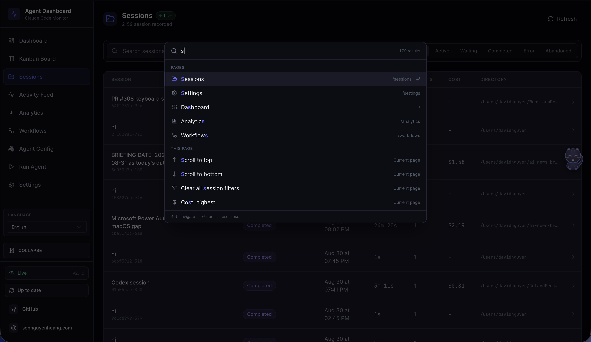

Claude Code Agent Monitor
A professional monitoring platform for Claude Code agent activity. Captures sessions, agents, and tool events via native hooks, persists them in SQLite, and streams updates to a React UI over WebSocket — with no external services required.
System Overview

Claude Code Agent Monitor integrates with Claude Code through its native hook system. When Claude Code performs any action — tool use, session start, subagent orchestration, session end — it fires a hook that calls a small Node.js script bundled with this project. That script forwards the event over HTTP to the dashboard server, which stores it in SQLite and broadcasts it to the browser over WebSocket.
End-to-end data pipeline from Claude Code to the browser
The server binds 127.0.0.1 (loopback) by default, so it is not
network-reachable and everything runs on your machine. No data leaves your system.
No API keys. No external services. Exposing it more widely is opt-in via
DASHBOARD_HOST and should be paired with DASHBOARD_TOKEN.
What's Included
Every feature is driven by real hook events — nothing is hardcoded or simulated in production mode.
Screenshots


config.toml, account models, profiles, MCP servers, projects, skills, hooks, rules, plugins, and instructions. Edit supported user-managed files with timestamped backups; config.toml is edit-only.



Cmd/Ctrl+K from anywhere opens the dashboard's only launcher. One query resolves nine groups: recent commands, the nine pages, live server-side session search, the current page's own actions, every known project directory, page sub-views and list filters, all 13 Settings sections, all 12 Agent Config tabs, and preference, data-scope and language actions. Matching is subsequence-based with the matched characters highlighted
/api/docs: collapsible endpoint groups, request/response schemas, auth headers, and try-it-out request execution against the live local server
/api/redoc, served entirely offline with no CDN. Complements the interactive Swagger UI at /api/docs; every backend route is documented with parameters, schemas, and examples
/api/metrics scrapes. The npm-only local helper uses admin / admin; container stacks read the admin password from deployments/secrets/grafana-admin-password.
/consoles/index.html with live metric cards, session/token tables, and drill-down links into the Graph UI (Prometheus 3.x compatible — queries the HTTP API directly)
sum(ccam_sessions), ccam_events_total, rate(ccam_tokens_total[5m])) with starter expressions from the CCAM console and recording rules in monitoring/prometheus/ccam-rules.ymlHook Events Captured
| Hook Type | Trigger | Dashboard Action |
|---|---|---|
SessionStart |
Claude Code session begins |
Creates session and main agent. Stamps awaiting_input_since (with awaiting_reason = session_start) so the row lands in Waiting from the start (the CLI is at a prompt) — except a compact-source SessionStart (mid-turn auto-compaction), which leaves the flag untouched so a working session stays Active. Reactivates resumed sessions. Abandons orphaned sessions with no activity for DASHBOARD_STALE_MINUTES (default 180).
|
UserPromptSubmit |
User hits enter on a prompt |
Clears the waiting flag and promotes the main agent to
Working. The only reliable signal that text-only assistant turns have started — they emit no PreToolUse before Stop.
|
PreToolUse |
Agent begins using a tool |
Clears the waiting flag, sets agent →
Working, current_tool set. If tool is Agent, subagent record created.
|
PostToolUse |
Tool execution completes |
Clears the waiting flag (covers permission-prompt approvals mid-tool).
current_tool cleared. Agent stays
Working.
|
Stop |
Claude finishes a turn |
Non-error: main agent → waiting — UI shows
Waiting until the next user input. stop_reason=error: marks the agent and session
Error. Background subagents keep running.
|
SubagentStop |
Background agent finished |
Matched subagent →
Completed. Deliberately does not clear the waiting flag — a backgrounded subagent finishing tells us nothing about the human. Also kicks off a fire-and-forget JSONL scan (scanAndImportSubagents) that walks the session's subagents/agent-*.jsonl files, pairs tool_use ↔ tool_result blocks by tool_use_id, and emits per-tool PreToolUse + PostToolUse events under each subagent's own agent_id — surfaces tool calls that subagents make internally and which never fire any hooks. The same scan also rebuilds the nested-subagent hierarchy — it repoints each subagent's parent_agent_id to the true spawner recovered from the transcript's Task tool result (toolUseResult.agentId), so subagents that spawn their own subagents nest correctly instead of flattening under main.
|
Notification |
Agent sends notification | Event logged to activity feed. Permission/input-prompt patterns (e.g. "needs your permission", "waiting for your input") set the agent to waiting and stamp awaiting_input_since (with awaiting_reason = notification). Compaction-related notifications tagged as Compaction events. Triggers a browser notification if enabled. |
Compaction |
/compact detected in JSONL |
Creates a compaction subagent →
Completed. Detected via isCompactSummary entries in the transcript. Token baselines preserve pre-compaction totals. Periodic scanner (cadence ~¼ of DASHBOARD_STALE_MINUTES) catches compactions when no hooks fire.
|
APIError |
API error detected in transcript | Extracted from JSONL during history import, real-time transcript scanning, or the error detection watchdog. Captures quota limits, rate limits, auth failures, and other API errors. Immediately marks sessions and agents as error — previously recorded as events without changing status. |
Interrupted |
Turn cancelled by the user (Esc) |
Synthesized by the watchdog because pressing Esc fires no hook. Recovered either from the transcript [Request interrupted by user] marker (flagged as pendingInterrupt) or, when Esc preceded any output and left no marker, from the idle-working timeout (DASHBOARD_WORKING_IDLE_SECONDS, default 120). Moves the session to Waiting — the same state a normal Stop produces.
|
TurnDuration |
Per-turn timing recorded | Extracted from JSONL turn boundaries. Records the duration of each assistant turn for latency analysis. |
SessionEnd |
Claude Code CLI process exits | Drops the waiting flag. If the session is already in Error, the error state is preserved; otherwise marks all agents and the session as Completed. Evicts the session's transcript from the shared cache. |
Quick Start
Clone
Clone the repository to your machine
Install
Run npm run setup to install all dependencies
Start
Run npm run dev — server + client launch automatically
Use Claude
Start a new Claude Code session — events appear in real-time
# 1. Clone
git clone https://github.com/hoangsonww/Claude-Code-Agent-Monitor.git
cd Claude-Code-Agent-Monitor
# 2. Install all dependencies (server + client)
npm run setup
# Optional: install hooks on the HOST (e.g. for container deployments)
# or if auto-install on server startup fails. Run this on the host, never
# inside a container — the installer refuses there (issue #193).
npm run install-hooks
# Optional: develop in a preconfigured VS Code Dev Container / Codespace
# (Node 24 LTS + native build tools + Python, ports 4820/5173). Opt-in only —
# host-based dev is unaffected. See .devcontainer/.
# 3. Start in development mode
npm run dev
# → Express server on http://localhost:4820
# → Vite dev server on http://localhost:5173
# 4. (Optional) Build and run the local MCP server
npm run mcp:install
npm run mcp:build
npm run mcp:start # stdio (for MCP host integration)
npm run mcp:start:http # HTTP + SSE server on port 8819
npm run mcp:start:repl # interactive CLI with tab completion
# 5. Open the dashboard
# http://localhost:5173 (dev)
# http://localhost:4820 (prod after npm run build && npm start)The manual installer is interactive: Claude Code starts selected; use arrow keys, Space, then Enter to choose Claude Code, Codex (beta), or both. If a selected dashboard hook is already present, it warns before replacing only that entry and preserves unrelated hooks. The same guided installer is available from Settings → Hook Configuration. On the first dashboard visit, choose a data source, then use the provider-locked live-monitoring setup gate to install the selected hooks in place and review its output. You can also explicitly confirm hooks are already installed before continuing.
First-run readiness follows the selected scope: Claude Code requires Claude hooks, Codex requires Codex hooks, and Both requires both. Ready selections open the dashboard immediately; otherwise only missing selected providers appear in setup.
Alternative: Docker / Podman
A multi-stage Dockerfile and docker-compose.yml are included.
You can run the monitor with either Docker or Podman and keep the SQLite database in a
named volume.
# Docker Compose
docker compose up -d --build
# Podman Compose
podman compose up -d --build
# Plain Docker / Podman
docker build -t agent-monitor .
docker run -d --name agent-monitor \
-p 127.0.0.1:4820:4820 \
-v "$HOME/.claude:/home/node/.claude:ro" \
-v "$HOME/.codex:/home/node/.codex:ro" \
-v agent-monitor-data:/app/data \
agent-monitor
When you run the server directly on the host with npm run dev or
npm start, it automatically writes Claude Code hook entries to
~/.claude/settings.json. If you run the dashboard in Docker or Podman,
install hooks from the host with npm run install-hooks after the
container is up, then restart Claude Code. The installer refuses to run inside a
container (issue #193) so it never writes a container-internal handler path into a
bind-mounted host ~/.claude; override with
CCAM_ALLOW_CONTAINER_HOOKS=1 only if Claude Code itself runs in the
container.
Optional: Enable MCP and Agent Extensions
This repository also ships a local MCP server under mcp/ and extension
scaffolding for both Claude Code and Codex. These are optional for the dashboard UI, but
recommended for complete local-agent workflows. The MCP server supports stdio (for host
integration), HTTP+SSE (for remote clients), and an interactive REPL (for operator
debugging).
# MCP lifecycle
npm run mcp:install
npm run mcp:build
npm run mcp:start # stdio (default — for MCP hosts)
npm run mcp:start:http # HTTP + SSE server on port 8819
npm run mcp:start:repl # interactive CLI with tab completionVerification
After starting a Claude Code session, you should see:
| Page | Expected |
|---|---|
| Sessions | Your session listed with status Waiting (a fresh CLI is sitting at the prompt) — flips to Active the moment Claude starts a turn |
| Kanban Board | A Main Agent card in the Waiting column until you type your first message; flips to Working on UserPromptSubmit / PreToolUse and back to Waiting after each Stop |
| Activity Feed | Events streaming in; click any row to expand payload, use "Session →" to drill into session details |
| Dashboard | Stats updating in real-time |
Hooks only fire to a running server. If Claude Code was already running when you started the dashboard, restart the Claude Code session.
Configuration
Environment Variables
| Variable | Default | Description | |||
|---|---|---|---|---|---|
DASHBOARD_PORT |
4820 |
Port the Express server listens on | |||
CLAUDE_DASHBOARD_PORT |
4820 |
Port used by the hook handler to reach the server (for custom port setups) | |||
MCP_DASHBOARD_BASE_URL |
http://127.0.0.1:4820 |
Base URL used by the local MCP server when calling dashboard APIs. Direct loopback HTTP is allowed with a bearer token; tokenized container-host aliases require HTTPS. | |||
MCP_DASHBOARD_API_TOKEN |
(unset) |
Bearer token for a protected dashboard. Falls back to
DASHBOARD_API_TOKEN.
|
|||
MCP_TRANSPORT |
stdio |
MCP transport mode: stdio, http, repl |
|||
MCP_HTTP_PORT |
8819 |
Port for the MCP HTTP+SSE server (only when MCP_TRANSPORT=http) |
|||
MCP_HTTP_HOST |
127.0.0.1 |
Bind address for the MCP HTTP server | |||
MCP_HTTP_AUTH_TOKEN / _FILE |
(unset) |
Protects MCP /mcp, /sse, and /messages; /health remains available to probes |
|||
MCP_HTTP_SESSION_TIMEOUT_MS |
1800000 |
Closes an idle MCP HTTP or SSE session after this long with no request, reclaiming its server; 0 disables reaping |
|||
DASHBOARD_DB_PATH |
data/dashboard.db |
Path to the SQLite database file | |||
DASHBOARD_ALLOWED_HOSTS |
(empty) |
Comma-separated extra Host-header names allowed past the DNS-rebinding guard — needed for a non-loopback client or scraper, such as Prometheus in Docker reaching /api/metrics via host.docker.internal; an unlisted host is rejected with 403 EBADHOST
|
|||
DASHBOARD_TOKEN_FILE |
(unset) |
File-backed dashboard REST and WebSocket token for Docker or Kubernetes secrets | |||
DASHBOARD_HOOK_TOKEN / _FILE |
(unset) |
Independent credential for authenticated remote /api/hooks/* ingestion |
|||
DASHBOARD_ENV_PATH |
repository .env |
Writable dotenv path used when Settings persists Claude or Codex home overrides | |||
CCAM_DASHBOARD_URL |
local discovery | Optional remote hook destination; non-loopback URLs require HTTPS and a hook token | |||
DASHBOARD_WORKING_IDLE_SECONDS |
120 |
Idle-working timeout the watchdog uses to recover an Esc cancel that left no transcript marker
|
|||
DASHBOARD_LIVENESS_PROBE |
1 |
Set to 0 to disable the dead-session liveness reap — the watchdog completes active local sessions only when their matching claude or codex process is gone; auto-disabled on Windows and in containers. Sessions forwarded from another machine (household hooks) report a non-POSIX cwd and are auto-skipped, so a mixed local + forwarded deployment no longer needs this off.
|
|||
DASHBOARD_LIVENESS_IDLE_SECONDS |
60 |
Idle gate for watchdog-tick liveness reaps — the transcript must not have been written for at least this long (last hook write is the fallback clock); startup passes skip the gate | |||
DASHBOARD_SESSION_SYNC_MS |
30000 |
Poll interval for the background sync of ~/.claude/projects; 0 disables the poll but keeps the filesystem watcher
|
|||
DASHBOARD_CODEX_HOME |
~/.codex |
Optional Codex home. Settings saves this dashboard-only override, re-arms live rollout watching, and immediately scans the new sessions/ tree. |
|||
DASHBOARD_CODEX_SYNC_MS |
4000 |
Safety-net interval (ms) for incremental Codex rollout scanning. Default 4000; 0 disables polling but keeps the watcher. |
|||
DASHBOARD_CODEX_HOOK_IDLE_SECONDS |
60 |
How long a hook-only Codex session may leave a reported-finished turn unanswered before its SessionEnd is presumed lost. A run started with codex exec --ephemeral writes no rollout, so it has neither a transcript mtime nor an open file for the liveness probes — the fallback that matters most on Windows, where both probes are unavailable. Only a session already parked by a real Stop hook qualifies, because SessionEnd follows Stop within a few hundred milliseconds. Silence never qualifies: a rollout-less run emits no hooks at all while a tool runs, so an idle timer would complete a live CI build. A session still running self-heals on its next hook. |
|||
DASHBOARD_TASK_SUMMARY_TTL_MS |
2000 |
Serve-stale window (ms) for per-transcript task-progress summaries behind include_task_progress list requests and the session-detail todo_snapshot. A transcript being actively appended to rarely hits the size+mtime cache key, so without this floor every list reload fully re-parses each multi-MB live transcript. 0 restores immediate re-parse on every change. |
DASHBOARD_TOKEN_REPAIR |
1 |
One-time automatic repair of token totals inflated before usage was reconciled per message.id. replaceTokenUsage is a high-water mark, so the parser fix alone can never lower a historical total. Marker-gated, deferred off the boot path, skipped while another dashboard shares the data directory, and it snapshots the old rows to token_usage_pre_repair first. 0 skips it — repair manually with npm run repair-tokens. |
NODE_ENV |
development |
Set to production to serve built client from
client/dist/
|
Hook Configuration
The server writes the following to ~/.claude/settings.json on every
startup:
{
"hooks": {
"SessionStart": [
{ "hooks": [{ "type": "command", "command": "node \"/path/to/scripts/hook-handler.js\" SessionStart" }] }
],
"PreToolUse": [
{ "matcher": "*", "hooks": [{ "type": "command", "command": "node \"/path/to/scripts/hook-handler.js\" PreToolUse" }] }
],
"PostToolUse": [
{ "matcher": "*", "hooks": [{ "type": "command", "command": "node \"/path/to/scripts/hook-handler.js\" PostToolUse" }] }
],
"Stop": [{ "matcher": "*", "hooks": [{ "type": "command", "command": "node \"/path/to/scripts/hook-handler.js\" Stop" }] }],
"SubagentStop": [{ "matcher": "*", "hooks": [{ "type": "command", "command": "node \"/path/to/scripts/hook-handler.js\" SubagentStop" }] }],
"Notification": [{ "matcher": "*", "hooks": [{ "type": "command", "command": "node \"/path/to/scripts/hook-handler.js\" Notification" }] }],
"SessionEnd": [
{ "hooks": [{ "type": "command", "command": "node \"/path/to/scripts/hook-handler.js\" SessionEnd" }] }
]
}
}
Existing hooks are preserved. The installer only adds or updates entries containing
hook-handler.js.
Scripts Reference
| Script | Command | Description |
|---|---|---|
setup |
npm run setup |
Install all dependencies (server + client) |
dev |
npm run dev |
Start server + client in development mode with hot reload |
dev:server |
npm run dev:server |
Start only the Express server with --watch |
dev:client |
npm run dev:client |
Start only the Vite dev server |
build |
npm run build |
TypeScript check + Vite production build to client/dist/ |
start |
npm start |
Start Express in production mode serving built client |
install-hooks |
npm run install-hooks |
Manually write Claude Code hooks to ~/.claude/settings.json |
seed |
npm run seed |
Insert demo sessions, agents, and events (8 sessions / 23 agents / 106 events) |
import-history |
npm run import-history |
Import historical Claude Code sessions from ~/.claude with deep JSONL extraction (API errors, turn durations, thinking blocks, subagent data) |
reconcile-tokens |
npm run reconcile-tokens |
Refresh token totals for imported sessions from their transcripts. Never lowers an existing total |
repair-tokens |
npm run repair-tokens |
Re-derive non-workflow token totals for Claude sessions whose transcripts are still on disk and reset the compaction baselines, preserving workflow and Codex rows. One-time repair for databases inflated by the old per-record usage sum; stop the dashboard before running it |
clear-data |
npm run clear-data |
Delete all data from the database (keeps schema) |
test |
npm test |
Run all server and client tests |
test:server |
npm run test:server |
Server integration tests only (Node built-in test runner) |
test:client |
npm run test:client |
Client unit tests only (Vitest + Testing Library) |
mcp:install |
npm run mcp:install |
Install dependencies for the local MCP package under mcp/ |
mcp:typecheck |
npm run mcp:typecheck |
Type-check MCP source without emitting build output |
mcp:build |
npm run mcp:build |
Compile MCP server into mcp/build/ |
mcp:start |
npm run mcp:start |
Start MCP server (stdio transport — for MCP hosts) |
mcp:start:http |
npm run mcp:start:http |
Start MCP HTTP+SSE server on port 8819 (Streamable HTTP + legacy SSE) |
mcp:start:repl |
npm run mcp:start:repl |
Start interactive MCP REPL with tab completion and colored output |
mcp:dev |
npm run mcp:dev |
Run MCP server in dev mode with tsx (stdio) |
mcp:dev:http |
npm run mcp:dev:http |
Run MCP HTTP server in dev mode with tsx |
mcp:dev:repl |
npm run mcp:dev:repl |
Run MCP REPL in dev mode with tsx |
mcp:docker:build |
npm run mcp:docker:build |
Build MCP container image with Docker (agent-dashboard-mcp:local) |
mcp:podman:build |
npm run mcp:podman:build |
Build MCP container image with Podman
(localhost/agent-dashboard-mcp:local)
|
test:mcp |
npm run test:mcp |
Run MCP server unit tests |
desktop:install |
npm run desktop:install |
Install Electron + electron-builder under desktop/; rebuilds better-sqlite3 for Electron's ABI. Preflights the native better-sqlite3 build; prints actionable setup help (incl. a no-toolchain alternative) on failure |
desktop:build |
npm run desktop:build |
Prebuild guard + tsc compile of the Electron main process into desktop/out/ |
desktop:dev |
npm run desktop:dev |
Build, then launch the desktop app against desktop/out/main.js |
desktop:test |
npm run desktop:test |
Desktop smoke test — spawn Electron and probe /api/health |
desktop:dmg |
npm run desktop:dmg |
Build both per-arch DMGs (arm64 + x64). Correct for release — slower (packages each arch) |
desktop:dmg:arm64 |
npm run desktop:dmg:arm64 |
Build an Apple-Silicon-only DMG — fast (~1 min), recommended for a single machine |
desktop:dmg:x64 |
npm run desktop:dmg:x64 |
Build an Intel-only DMG — fast (macOS host) |
desktop:dmg:universal |
npm run desktop:dmg:universal |
Build one merged universal DMG (arm64 + x86_64 in a single file). Optional, slowest — not what the release ships |
desktop:win |
npm run desktop:win |
Build the Windows NSIS installer ClaudeCodeMonitor-Setup-<ver>-x64.exe (Windows host) |
desktop:win:portable |
npm run desktop:win:portable |
Build the no-install portable ClaudeCodeMonitor-<ver>-x64-portable.exe (Windows host) |
build:win-icon |
npm run build:win-icon |
Regenerate desktop/assets/icon.ico from icon.png (PowerShell + .NET; Windows host) |
format |
npm run format |
Format all files with Prettier |
format:check |
npm run format:check |
Check formatting without writing |
ccam CLI
The full dashboard feature surface is also available from any terminal through the
dependency-free ccam CLI (bin/ccam.js). It is linked
automatically by npm run setup (via a fail-soft npm link),
discovers the running server through the same
~/.claude/.agent-dashboard.json registry the hook handler uses
(override with CLAUDE_DASHBOARD_PORT / DASHBOARD_PORT),
and renders a full terminal UI — box-drawn tables, status icons, inline bar
charts, and agent trees — that degrades to plain text when piped
(--no-color / NO_COLOR / FORCE_COLOR
respected), so it is equally at home in an interactive shell,
grep pipelines, or CI.
For a live monitoring session, ccam repl (aliases
shell / i) opens an interactive shell where you type
commands without the ccam prefix — with a CCAM welcome banner,
tab-completion, persisted arrow-key history, a live server-status prompt
(● up / ○ offline), a grouped help /
help <cmd> menu, and a watch [secs] <cmd>
built-in that auto-refreshes any command. Each entered line runs as an isolated
child process, so an offline refusal or a blocking tail never takes
the shell down.
| Group | Commands | What you get |
|---|---|---|
| Server | status · start · repl |
Up/down indicator, a background server start that waits for health, and the
interactive ccam repl shell — tab-completion, persisted history, a
live server-status prompt, and a watch auto-refresh
|
| Monitoring | health · stats · kanban · tail |
Reachability, totals and status distributions, the Kanban board rendered as text columns, and a live event feed that polls for new rows every 2 seconds |
| Data | sessions · session <id> · agents · events |
Filterable tables plus a per-session deep dive with an indented agent tree, per-session cost, and the most recent events |
| Insights | analytics · workflows · runs · cost |
Token totals and top tools, workflow-intelligence stats with detected
patterns, dynamic Workflow-tool runs, and the per-model cost breakdown,
which can be scoped to a single session with --session,
surfaces server-tool surcharges (web search / code execution), warns about
models with usage but no matching pricing rule (priced at $0, excluded from
the total), and points to ccam pricing set
|
| Alerts & Webhooks | alerts · alerts ack · rules · webhooks · webhooks test |
The fired-alert feed with acknowledge / acknowledge-all, the rule list, and synthetic test deliveries against any webhook target |
| Pricing | pricing · pricing set / delete / reset |
Full pricing-rule CRUD with per-mtok rates — including 1-hour cache-write, fast-tier, and time-limited intro rates — straight from the terminal, with Fast In/Out and Intro In/Out columns in the list view |
| Import | import rescan · import path <dir> |
The same idempotent ingestion pipeline the Settings page uses, reporting imported / backfilled / skipped / error counts |
| Remote Data Sources | remote-sources list · remote-sources add · remote-sources test <id> · remote-sources sync [id] · remote-sources rm <id> [--purge] |
List, add, and test SSH data sources; sync one source (or all when no id is given); and remove a source, optionally purging the sessions it imported |
| Administration | doctor · info · export · cleanup · reinstall-hooks · update-check · clear-data --yes · open |
Connectivity and hook diagnosis, raw system info, full JSON export, session
cleanup, hook reinstallation, an update check that prints how far behind the
canonical remote you are plus the copy-paste update command, and a guarded
wipe that refuses to run without --yes
|
The CLI also manages the server itself: ccam status shows an
up/down indicator and ccam start boots a detached production
server. When the server is down, read-only commands fall back to reading
data/dashboard.db directly under an explicit offline banner,
while live or server-computed commands refuse with the specific reason.
Read commands only issue GETs; mutating commands map one-to-one to explicit
dashboard actions; and the single destructive command,
clear-data, always refuses to run without an explicit
--yes flag. Exit codes are script-friendly: 0 on success, 1 on any
failure. See docs/CLI.md for the complete reference.
System Architecture
Core dashboard telemetry is composed of three processes (Claude hook source, dashboard server, browser UI). When the local MCP sidecar is enabled, it integrates with the same dashboard API via stdio, HTTP+SSE, or interactive REPL transport.
Full system architecture — Claude Code process → Hook Layer → Server → Browser
Agent State Machine
Agent status transitions driven by hook events. waiting is a real persisted status — agents start as waiting and return to it after each turn. Error recovery requires active user retry (UserPromptSubmit or PreToolUse). A background watchdog detects API errors in transcripts every 15 s. The same watchdog also recovers Esc-cancelled turns — via either the transcript [Request interrupted by user] marker or the idle-working timeout when Esc preceded any output — and moves the session to Waiting.
Session State Machine
Session status lifecycle. waiting is a UI overlay — persisted as active with awaiting_input_since set and awaiting_reason recording why (session_start, stop, notification, or interrupted). SessionEnd preserves error state. Error recovery requires UserPromptSubmit or PreToolUse. The watchdog also recovers Esc-cancelled turns (marker or idle-timeout path) and moves the session to Waiting. The dashboard surfaces the reason on every Waiting badge (hover tooltip, plus an inline chip on the Sessions table and session detail header) and in a waiting-for-input banner on the session detail page.
Data Flow
Event Ingestion Pipeline
parse JSON,
add hook_type"] HH -->|POST| API["Express
/api/hooks/event"] API --> TX["SQLite txn:
ensureSession,
process by hook_type,
insertEvent, COMMIT"] TX --> RULES["per hook_type:
stamp / clear awaiting flag,
track current tool,
working / waiting / error,
complete subagents,
SessionEnd → all done"] RULES -->|broadcast| WS["WebSocket:
agent_updated,
new_event"] WS -->|publish| UI["React Client
re-renders"]
Complete event ingestion from hook fire to browser re-render
Client Data Loading Pattern
GET sessions,
agents, events, stats"] API -->|JSON| PAGE["setState,
React Page renders"] PAGE -->|subscribe| LIVE["Live updates loop:
WS → eventBus.publish
→ handler →
reload / optimistic update"] LIVE -->|unmount| UNMOUNT["eventBus.unsubscribe()"]
Initial load + WebSocket subscription lifecycle
Server Architecture
Express app + HTTP server"] DB["server/db.js
SQLite + prepared statements
better-sqlite3 / node:sqlite fallback"] WS["server/websocket.js
WS server + heartbeat"] HOOKS["routes/hooks.js
Hook event processing"] SESSIONS["routes/sessions.js
Session CRUD"] AGENTS["routes/agents.js
Agent CRUD"] EVENTS["routes/events.js
Event listing"] STATS["routes/stats.js
Aggregate queries"] ANALYTICS["routes/analytics.js
Analytics metrics"] PRICING["routes/pricing.js
Pricing CRUD + cost calc"] SETTINGS_R["routes/settings.js
System info + data mgmt"] WORKFLOWS_R["routes/workflows.js
Workflow visualizations"] INDEX --> DB INDEX --> WS INDEX --> HOOKS INDEX --> SESSIONS INDEX --> AGENTS INDEX --> EVENTS INDEX --> STATS INDEX --> ANALYTICS INDEX --> PRICING INDEX --> SETTINGS_R INDEX --> WORKFLOWS_R HOOKS --> DB HOOKS --> WS SESSIONS --> DB SESSIONS --> WS AGENTS --> DB AGENTS --> WS EVENTS --> DB STATS --> DB ANALYTICS --> DB PRICING --> DB SETTINGS_R --> DB WORKFLOWS_R --> DB
Server module dependency graph
Server Modules
| Module | Responsibility |
|---|---|
server/index.js |
Express app setup, middleware (CORS, JSON 1MB limit), route mounting, static serving in production, HTTP server, auto-hook installation on startup |
server/db.js |
SQLite connection, WAL/FK pragmas, schema migrations (CREATE TABLE IF NOT EXISTS), all prepared statements as a reusable stmts object. Tries
better-sqlite3 first, falls back to built-in
node:sqlite via compat-sqlite.js
|
server/compat-sqlite.js |
Compatibility wrapper giving Node.js built-in node:sqlite
(DatabaseSync) the same API as better-sqlite3 —
pragma, transaction, prepare. Used as automatic fallback on Node 22+
|
server/websocket.js |
WebSocket server on /ws path, 30s ping/pong heartbeat, typed
broadcast(type, data) function
|
routes/hooks.js |
Core event processing inside SQLite transactions. Auto-creates sessions/agents. Switch-case dispatch by hook type. Extracts token usage from Stop events. |
routes/sessions.js |
CRUD with pagination. GET includes agent count via LEFT JOIN. POST is idempotent on session ID. |
routes/agents.js |
CRUD with status/session_id filtering. PATCH broadcasts
agent_updated.
|
routes/events.js |
Read-only event listing with session_id filter and pagination. |
routes/stats.js |
Single aggregate query — total/active counts, status distributions, WS connection count. |
routes/analytics.js |
Extended analytics — token totals, tool usage counts, daily event/session trends, agent type distribution, event type breakdown, average events per session. |
routes/pricing.js |
Model pricing CRUD (list, upsert, delete). Per-session and global cost calculation with pattern-based model matching and specificity sorting. |
routes/settings.js |
System info (DB size, row counts, hook status, server uptime). Data export as
one versioned JSON bundle and matching import/restore (POST /api/settings/import
via server/lib/data-transfer.js — idempotent, session-atomic,
non-destructive; consolidate machines). Session cleanup (abandon stale active
sessions, purge old completed sessions). Clear all data. Reset pricing to
defaults. Reinstall hooks.
|
routes/workflows.js |
Aggregate workflow visualization data (agent orchestration, tool transitions,
collaboration networks, workflow patterns, model delegation, error propagation,
concurrency, session complexity, compaction impact). Accepts
?status=active|completed filter. Per-session drill-in with
agent tree, tool timeline, and events.
|
Client Architecture
React component tree
Client Routes
Key Client Modules
| Module | Purpose |
|---|---|
lib/api.ts |
Typed fetch wrapper — one method per REST endpoint. All return typed promises. |
lib/types.ts |
TypeScript interfaces: Session, Agent,
DashboardEvent, Stats, Analytics,
WSMessage, plus all workflow-related types
(WorkflowData, SessionDrillIn, etc). Status config
maps.
|
lib/eventBus.ts |
Set-based pub/sub. subscribe(fn) returns an unsubscribe function
for clean useEffect teardown.
|
lib/format.ts |
Date/time formatting helpers — relative time, duration, ISO display. |
hooks/useWebSocket.ts |
Auto-reconnecting WebSocket React hook. 2-second reconnect interval. Publishes messages to eventBus. |
PWA & Service Worker
The dashboard is a Progressive Web App with its own
manifest.json and Service Worker
(client/public/sw.js). The landing page and wiki are
also independent PWAs with separate manifests and service workers.
| Surface | Manifest | Service Worker | Strategy |
|---|---|---|---|
| Dashboard | client/public/manifest.json |
client/public/sw.js |
Precaches app shell. Cache-first for static assets (JS/CSS
bundles). Network-first for navigation with offline fallback.
Skips /api/*, /ws, and Vite HMR.
Preserves push notification handlers.
|
| Landing page | manifest.json (root) |
sw.js (root) |
Precaches HTML shell, favicon, OG image. Lazy-caches screenshot PNGs on first view. Network-first HTML, cache-first assets. |
| Wiki | wiki/manifest.json |
wiki/sw.js |
Precaches index.html, style.css,
script.js. Fully offline after one visit.
|
All three SWs call skipWaiting() on install and delete
stale caches on activate (keyed by version strings like
dashboard-v1). Manifests use SVG icons
(favicon.svg) with sizes="any". iOS
standalone mode is enabled via
apple-mobile-web-app-capable meta tags.
State Management
The client deliberately avoids Redux / Zustand / Context. Each page owns its data and lifecycle. WebSocket events trigger a reload or append — no complex state merging.
Each page pulls initial data from REST then subscribes to eventBus for live updates
There is no cross-page shared state. Each page fetches and owns exactly the data it displays. This simplifies debugging and avoids stale-closure hazards that are common with global stores in long-running WebSocket apps.
Database Design
Entity Relationship Diagram — SQLite schema
Indexes
| Index | Table | Column(s) | Purpose |
|---|---|---|---|
idx_agents_session |
agents | session_id |
Fast agent lookup by session |
idx_agents_status |
agents | status |
Kanban column queries |
idx_events_session |
events | session_id |
Session detail event list |
idx_events_type |
events | event_type |
Filter events by type |
idx_events_created |
events | created_at DESC |
Activity feed ordering |
idx_sessions_status |
sessions | status |
Status filter on sessions page |
idx_sessions_started |
sessions | started_at DESC |
Default sort order |
SQLite Configuration
| Pragma | Value | Rationale |
|---|---|---|
journal_mode |
WAL |
Concurrent reads during writes. Far better for read-heavy dashboards. |
foreign_keys |
ON |
Referential integrity — prevents orphaned agents/events. |
busy_timeout |
5000 |
Wait up to 5s for write lock instead of failing immediately under load. |
API Reference
All endpoints return JSON. Errors follow
{ "error": { "code", "message" } }. The OpenAPI 3.0 spec comprehensively
documents every backend route - parameters, request/response schemas, field
descriptions, and examples. It is served at /api/openapi.json (with a
committed openapi.yaml mirror), rendered as interactive Swagger UI at
/api/docs, and as a clean, read-optimized ReDoc reference at
/api/redoc. ReDoc is self-hosted, so it works fully offline.
/api/docs — auto-generated interactive playground for every REST endpoint. Try-it-out forms, request/response schema, auth headers, and curl snippets
/api/redoc — a self-hosted, read-optimized three-panel rendering of the same OpenAPI spec: deep-linkable sections, search, and full schema/example detail. Works entirely offline (no CDN)Health
{ "status": "ok", "timestamp": "..." }
Sessions
status, q (case-insensitive search across
id/name/cwd), limit
(default 50, max 10000), offset. Response includes
total for paginators.
id)
Agents
status, session_id,
limit, offset
Events, Stats, Analytics
session_id, limit,
offset
Metrics
/api — behind the DNS-rebinding Host-header guard and the optional DASHBOARD_TOKEN: a non-loopback scraper (e.g. Prometheus in Docker via host.docker.internal) must be allowlisted with DASHBOARD_ALLOWED_HOSTS or the scrape returns 403 EBADHOST, and must send the token when one is set. A ready-to-run Prometheus + Grafana stack with a pre-provisioned "CCAM — Overview" dashboard lives in monitoring/ (cd monitoring && docker compose up -d; Grafana on port 3000).
Hooks Ingestion
Pricing
Settings
file or JSON { path }). The restore is idempotent and non-destructive, so it can consolidate machines.
Import History
~/.claude/projects folder
~/.claude/projects directory; safe to re-run
(idempotent via session-ID dedup)
{ path }); tilde
(~) is expanded; walks subdirectories recursively and imports every
.jsonl found
.jsonl, .meta.json,
.zip, .tar, .tar.gz, .tgz,
.gz. Per-request staging dir, path-traversal and extraction-size
guards. Returns 413 EXTRACTION_LIMIT_EXCEEDED on suspected
bomb archives
Workflows
?status=active|completed query param
to filter by workflow status
Alerts
?unacked=true,
limit, offset; carries total and
unacked counts)
event_pattern | inactivity |
status_duration | token_threshold)
Webhooks
type is immutable)
{
"hook_type": "PreToolUse",
"data": {
"session_id": "abc-123",
"tool_name": "Bash",
"tool_input": { "command": "ls -la" }
}
}WebSocket Protocol
| Property | Value |
|---|---|
| Path | ws://localhost:4820/ws |
| Protocol | Standard WebSocket (RFC 6455) |
| Heartbeat | Server pings every 30s — clients that don't pong are terminated |
| Reconnect | Client retries every 2 seconds on disconnect |
Message Envelope
// All messages use this shape
{
type: "session_created" | "session_updated" |
"agent_created" | "agent_updated" | "new_event";
data: Session | Agent | DashboardEvent;
timestamp: string; // ISO 8601
}Client WebSocket auto-reconnect state machine
Hook Integration
Hook Handler Design
scripts/hook-handler.js is a minimal, fail-safe forwarder. It always exits
0 so it can never block Claude Code regardless of server state.
Codex rollout records are the source of truth for live cards: user_message
and task_started mark the main agent working; task_complete
keeps the session active while showing Waiting; and turn_aborted shows
interrupted Waiting. Newest rollouts are processed first, and an unreadable historical
file is retried without delaying the rest.
A fresh interactive Codex process first appears as an in-memory Waiting card, including
while Codex is still at its trust screen or first prompt and has no stable session ID.
The card is local-only, non-navigable, excluded from durable APIs unless
include_transient=true, and removed on process exit. A
SessionStart hook, native live-thread row, or rollout then creates the
durable session and main-agent rows without copying the temporary card into history.
If the user selects an existing thread in Codex's Resume picker, that exact Codex PID
opens the resumed rollout or writer lock immediately. CCAM uses that signal to switch
from the temporary card to the durable resumed session before the first new message.
Codex response_item tool calls are indexed exactly once through a separate
rollout cursor, so provider-scoped Workflows shows recorded tool flows, session drill-ins,
token/model totals, and context_compacted counts without replaying lifecycle
or token accounting. Dynamic Workflows stays hidden in a Codex-only scope because its
on-disk journals are a Claude Code feature.
hook-handler.js flow — always exits 0, never blocks Claude Code
Hook Installation Flow
Hook installation is idempotent — safe to run multiple times
Import Pipeline

.gz archives. Progress bar and result card show counts for every run
The dashboard ships with a first-class history importer that backfills
sessions, agents, events, tokens, and costs from Claude Code JSONL transcripts.
Live hook ingestion and manual import share the exact same parser —
parseSessionFile + importSession in
scripts/import-history.js — which is the architectural contract that
guarantees imported token totals and cost values are identical to those captured in
real time. Re-imports are idempotent: session IDs are the dedup key and compaction
baseline_* columns preserve pre-compaction token totals.
Three Modes, One Pipeline
All three modes funnel into the same parser and DB transaction — imported numbers match live capture bit-for-bit
Upload Request Sequence
per-request tempDir,
fileFilter rejects
unsupported"] M --> EX["per file:
extractInto + safeJoin
(no absolute / ..),
enforce MAX_EXTRACT_BYTES"] EX --> DEC{"bomb /
oversized?"} DEC -->|yes| ERR["413
EXTRACTION_LIMIT_
EXCEEDED"] DEC -->|no| IMP["importFromDirectory:
collectJsonlFiles,
parseSessionFile,
importSession (1 txn)
→ SQLite"] IMP -->|progress| RESP["200: imported,
backfilled, skipped,
errors, rejected_files"] RESP --> CLEAN["rmTempDir (finally)"]
Upload path: multipart → safe extract → walk → parse → import — every temp dir
reclaimed in finally
Idempotence & Cost Accuracy
The baseline_* columns make cost monotonic under re-imports —
compacted sessions retain pre-compaction usage for billing
Supported Source Layouts
| Layout | Example | Handling |
|---|---|---|
| Default Claude Code | <proj>/<sid>.jsonl |
Session transcript — extracts tokens, compactions, tool uses, turn durations |
| Default subagent | <proj>/<sid>/subagents/agent-*.jsonl |
Paired with parent on discovery via findSessionSubagents |
| Alternative subagent | <proj>/subagents/<sid>/agent-*.jsonl |
Paired with parent on discovery (second layout probed automatically) |
| Orphan subagent | No parent JSONL in source, but sid exists in DB |
importFromDirectory probes both layouts; attaches if the parent is found |
| Flat JSONL drop | <root>/<sid>.jsonl |
Recognized as a loose session transcript |
| Archives | .zip, .tar, .tar.gz, .tgz |
Extracted into a per-request temp dir, then walked by the same importer |
| Single-file gzip | any.jsonl.gz |
Gunzipped in streaming mode with running byte-counter size cap |
Safety Model
| Threat | Mitigation |
|---|---|
| Path traversal via archive entries | archive.safeJoin resolves under the extraction root; any .. or absolute path returns null |
| Zip / tar / gzip bombs | MAX_EXTRACT_BYTES (default 4 GB) enforced by running byte counter; aborts with ExtractionLimitError → HTTP 413 |
| Per-file upload size abuse | multer limits.fileSize = MAX_UPLOAD_BYTES (default 1 GB) |
| Too many files per request | multer limits.files = MAX_UPLOAD_FILES (default 2000) |
| Unsupported file types | fileFilter drops them early and reports them in rejected_files[] |
| Concurrent upload temp-dir collisions | Per-request temp dir on req._ccamUploadDir; created in multer destination, reclaimed in finally |
Arbitrary absolute path on scan-path |
Validated: must be absolute (after ~ expansion), exist, and be a directory |
Relative / traversal paths on scan-path |
Rejected with INVALID_INPUT |
Environment Variables
| Variable | Default | Purpose |
|---|---|---|
CCAM_IMPORT_MAX_BYTES |
1 GB | Maximum size per uploaded file on /api/import/upload |
CCAM_IMPORT_MAX_FILES |
2000 | Maximum files per upload request |
CCAM_IMPORT_MAX_EXTRACT_BYTES |
4 GB | Ceiling on total uncompressed bytes from any single archive (zip-bomb defense) |
WebSocket Progress Events
Every import emits import.progress messages on /ws. Messages
are throttled to at most one every ~150 ms to avoid flooding the channel on
multi-thousand-session imports; the terminal complete and
error frames are never throttled.
{
"type": "import.progress",
"timestamp": "2026-04-18T15:48:34.123Z",
"data": {
"importId": "upload-1729264114000",
"phase": "parse",
"source": "upload",
"processed": 184,
"total": 512,
"current": "/tmp/ccam-import-work-xyz/project/<uuid>.jsonl",
"counters": { "imported": 120, "backfilled": 40, "skipped": 20, "errors": 4 }
}
}
Phases: start → scan → extract (upload only)
→ parse → complete, with error /
extract_error replacing complete on failure.
Remote Data Sources
One remote source can independently import Claude Code, Codex, or both.
Codex mirrors ~/.codex/sessions and its lightweight
session_index.jsonl title index; the connection test and sync result show
a separate state for each provider, so a missing provider never hides fresh data from the other.
How It Works
Each remote is mirrored over SSH, imported through the local pipeline, and tagged by source — the poller (default 15 s) keeps it near-real-time
Setup
Add a source with an SSH destination — either a user@host pair or an
alias defined in your ~/.ssh/config — plus an optional port, identity
file, and remote home directory. Use Test connection to verify reachability
before saving, then Sync now to pull immediately, or let the background
poller do it on its own schedule. Removing a source can optionally purge the
sessions it imported.
Data Scope
A global data-scope selector narrows the whole app: choose Local only,
All sources, or one specific machine. The scope flows into every data view
through a sources query parameter on the sessions, events, agents,
stats, and analytics endpoints, and sessions imported from a remote carry a
source badge so their origin is always visible.
Live Status
Remote sessions never emit live hooks to this dashboard, so a healthy Claude Code or
Codex provider mirror remains exempt from the local process-liveness reap and watchdog
transcript scan. Every successful provider sync still reconciles live status from the
matching mirrored transcript: activity is judged from the newest event timestamp
inside the JSONL (falling back to mirror mtime); within
DASHBOARD_REMOTE_ACTIVE_WINDOW_MS (default 10 minutes) keeps the session
active, otherwise it is reconciled to completed. If that
provider's SSH sync fails, is unavailable, or is stranded in syncing longer
than DASHBOARD_STALE_MINUTES — and an active session is itself older than
that same window — the ordinary stale-session sweep marks it abandoned and
completes its agents. A later fresh mirror reactivates a session that is still writing,
so unavailable providers never leave permanent Waiting cards.
Security Model
Authentication defers entirely to the host's own SSH stack —
~/.ssh/config, ssh-agent, on-disk keys, and
known_hosts. The dashboard stores no passwords or secrets; it
only records the SSH destination and connection options you supply.
StrictHostKeyChecking is left at its default, so the remote host must
already be present in known_hosts — an unknown host fails the
connection rather than being trusted blindly.
Environment Variables
| Variable | Default | Purpose |
|---|---|---|
DASHBOARD_REMOTE_SYNC_MS |
15000 |
Interval for the background remote poller (add/re-enable also syncs immediately); 0 disables the poller while leaving manual sync available |
DASHBOARD_REMOTE_SYNC_TIMEOUT_MS |
600000 |
Ceiling on a single scp-and-import run before it is aborted |
DASHBOARD_REMOTE_TEST_TIMEOUT_MS |
15000 |
Timeout for the Test connection probe |
DASHBOARD_REMOTE_ACTIVE_WINDOW_MS |
600000 |
Freshness window (10 min) for a Remote Data Source session's live status — judged from the newest JSONL event timestamp in the mirror (mtime fallback); healthy sources stay out of local liveness/stale checks, while errored or stale-syncing sources fall back to the global abandon sweep |
API Endpoints
The sources query parameter is also accepted on
/api/sessions, /api/events, /api/agents,
/api/stats, and /api/analytics to scope any view to
local, all, or a comma-separated list of source IDs.
WebSocket Events
Sync progress and connection state broadcast on /ws as
remote_source.status messages, so the Settings panel and the source
badges update live as a remote connects, syncs, or fails.
CLI
The same operations are available from the terminal via
ccam remote-sources, with subcommands list,
add, test <id>, sync [id] (all sources
when no id is given), and rm <id> [--purge] to remove a source
and optionally drop the sessions it imported.
MCP & Agent Extensions
In addition to dashboard telemetry, this project includes a production-grade local MCP server and complete extension scaffolding for both Claude Code and Codex. This gives agents a richer local tool surface while keeping all execution local-first. The MCP server supports three transport modes: stdio for host integration, HTTP+SSE for remote clients, and an interactive REPL for operator debugging.
Every transport reclaims its own resources. A stdio server self-terminates once its
host process is gone — stdin closing, or the process being re-parented away from the
parent it started under — so a host that dies without signalling leaves no orphan
behind. An HTTP session is released by DELETE /mcp, by an SSE
disconnect, or by an idle sweep governed by
MCP_HTTP_SESSION_TIMEOUT_MS, because terminating a session is optional in
the protocol and a vanished client would otherwise hold its server forever.

Local extension architecture: host instructions + skills + multi-transport MCP sidecar
Local MCP Server Runtime
The mcp/ package exposes dashboard-oriented tools for AI agents across three
transport modes. Mutation and destructive operations are policy-gated by environment
variables and disabled by default. HTTP mode serves both Streamable HTTP (protocol
2025-11-25) and legacy SSE (protocol 2024-11-05). REPL mode provides tab-completed
interactive tool invocation with colored output and JSON syntax highlighting.
All dashboard requests reject redirects. Direct loopback HTTP may carry the dashboard bearer token, while tokenized container-host aliases require HTTPS. History uploads are capped at 50 MiB per file and 100 MiB per call, binary responses at 10 MiB, and backup restore at 25 MiB. Only GET requests retry automatically.
| Component | Location | Notes |
|---|---|---|
| MCP source | mcp/src/ |
TypeScript server, tools, policy guards, transport layer, CLI UI |
| MCP build output | mcp/build/ |
Compiled JavaScript runtime for all transport modes |
| MCP docs | mcp/README.md |
Tool catalog, architecture diagrams, host integration examples, REPL guide |
| Transport layer | mcp/src/transports/ |
HTTP+SSE server, interactive REPL, tool handler collector |
| CLI UI | mcp/src/ui/ |
ANSI banner, colors, formatter with tables, boxes, JSON highlighting |
| Runtime commands | npm run mcp:start|start:http|start:repl|dev|dev:http|dev:repl |
Start MCP in stdio, HTTP+SSE, or REPL mode (production or dev) |
Agent Extension Layout
| Target | Files | Purpose |
|---|---|---|
| Claude Code | CLAUDE.md, .claude/rules/ |
Persistent project instructions + path-scoped coding rules |
| Claude Code Skills | .claude/skills/ |
Reusable workflows (onboarding, shipping, MCP ops, live debugging) |
| Claude Code Subagents | .claude/agents/ |
Specialized reviewers for backend, frontend, and MCP code paths |
| Codex Base Instructions | AGENTS.md, .codex/rules/default.rules |
Project-wide guidance + execution policy defaults |
| Codex Skills | .codex/skills/ |
Task-specific skills aligned to this repository |
| Codex Agents | .codex/agents/ |
Reusable custom-agent templates for implementation and review |
Root Helper Scripts
| Script | Role |
|---|---|
scripts/hook-handler.js |
Receives Claude hook payloads over stdin and forwards them to dashboard API |
scripts/install-hooks.js |
Writes/updates hook registration in ~/.claude/settings.json |
scripts/import-history.js |
Batch history importer used by server startup auto-import, the /api/import/* routes, and the import-history CLI. Exposes importAllSessions() for the default projects dir and the generalized importFromDirectory(dbModule, rootDir, {onProgress}) which walks any directory recursively, classifies session vs subagent JSONLs (probes both <proj>/<sid>/subagents/* and <proj>/subagents/<sid>/* layouts), and funnels everything through the shared parseSessionFile + importSession pipeline — identical to live ingest. Re-import is fully incremental: a per-event-type high-water mark (MAX(created_at) GROUP BY event_type for the session) drives ts > cutoff[type] dedup for Stop / PostToolUse / TurnDuration / ToolError, so long-running sessions whose transcripts grow across multiple days keep receiving new events on every re-run. sessions.ended_at is rolled forward when the JSONL has progressed past the stored value, and message-count metadata is refreshed on every pass. Session-ID dedup and baseline_* preservation keep token totals stable. Extracts tokens, API errors, turn durations, thinking blocks, usage extras, and per-subagent breakdowns |
server/routes/import.js |
Express router for Import History. Four endpoints: GET /api/import/guide (OS-aware instructions + default-dir stats), POST /api/import/rescan (default ~/.claude/projects), POST /api/import/scan-path (arbitrary absolute dir with ~ expansion), POST /api/import/upload (multer multipart). Each request uses a per-request temp dir reclaimed in finally. Progress broadcast as throttled import.progress WebSocket messages. Limits tunable via CCAM_IMPORT_MAX_BYTES, CCAM_IMPORT_MAX_FILES, CCAM_IMPORT_MAX_EXTRACT_BYTES |
server/lib/archive.js |
Safe archive extraction: .zip via adm-zip, .tar/.tar.gz/.tgz via tar, plain .gz streaming via zlib. Every entry validated through safeJoin which rejects absolute paths and .. traversal before any bytes are written. Enforces a hard MAX_EXTRACT_BYTES cap (default 4 GB) with ExtractionLimitError surfaced as HTTP 413 — defense against zip/tar/gzip bombs |
scripts/seed.js |
Loads deterministic demo data for testing and demos |
scripts/clear-data.js |
Removes persisted rows while preserving schema |
Plugin Marketplace
The Agent Monitor ships one shared marketplace containing 14 plugins for Claude Code and Codex, 66 packaged plugin skills, 18 Claude subagents, 34 Claude commands, 3 CLI helpers, 3 hook configurations, and 2 MCP-enabled plugins. The skills.sh CLI discovers 76 total repository skills. Product-specific manifests stay separate while skill instructions and validation remain shared.
Installation
# Add the marketplace
claude plugin marketplace add hoangsonww/Claude-Code-Agent-Monitor
codex plugin marketplace add hoangsonww/Claude-Code-Agent-Monitor
npx skills add hoangsonww/Claude-Code-Agent-Monitor --list
# Install individual plugins
claude plugin install ccam-analytics@claude-code-agent-monitor-plugins
claude plugin install ccam-cost-guard@claude-code-agent-monitor-plugins
claude plugin install ccam-productivity@claude-code-agent-monitor-plugins
claude plugin install ccam-devtools@claude-code-agent-monitor-plugins
claude plugin install ccam-insights@claude-code-agent-monitor-plugins
claude plugin install ccam-sessions@claude-code-agent-monitor-plugins
claude plugin install ccam-workflows@claude-code-agent-monitor-plugins
claude plugin install ccam-quality@claude-code-agent-monitor-plugins
claude plugin install ccam-config@claude-code-agent-monitor-plugins
claude plugin install ccam-dashboard@claude-code-agent-monitor-plugins
claude plugin install ccam-runner@claude-code-agent-monitor-plugins
claude plugin install ccam-integrations@claude-code-agent-monitor-plugins
claude plugin install ccam-platform@claude-code-agent-monitor-plugins
claude plugin install ccam-reports@claude-code-agent-monitor-pluginsAvailable Plugins
| Plugin | Skills | Agent | CLI Tools | Focus |
|---|---|---|---|---|
| ccam-analytics | session-report, cost-breakdown, usage-trends, productivity-score | analytics-advisor | ccam-stats |
Token usage (4 types + baselines), cost via pricing engine, daily trends, productivity scoring |
| ccam-cost-guard | budget-set, spend-forecast, cost-alert, model-savings, daily-budget-check | budget-sentinel | — | Budget guardrails: set budgets, forecast week/month-end spend, cost-threshold alerts, model-routing savings (fail-safe Stop hook) |
| ccam-productivity | daily-standup, weekly-report, sprint-summary, workflow-optimizer | productivity-coach | — | Standup reports, sprint tracking, workflow optimization via 11 workflow intelligence datasets |
| ccam-devtools | session-debug, hook-diagnostics, data-export, health-check | issue-triager | ccam-doctor, ccam-export |
Session debugging, hook diagnostics, data export (JSON/CSV), system health |
| ccam-insights | pattern-detect, anomaly-alert, optimization-suggest, session-compare | insights-advisor | — | Pattern detection via tool flow transitions, anomaly alerting, optimization, session comparison |
| ccam-sessions | session-search, session-timeline, transcript-replay, cwd-rollup, session-cleanup | session-investigator | — | Session forensics: search, timeline, transcript replay, per-cwd rollup, cleanup |
| ccam-workflows | dag-map, delegation-audit, concurrency-report, error-propagation, fleet-runs | orchestration-analyst | — | Multi-agent orchestration & fleet intelligence: DAG map, delegation audit, concurrency, error propagation, fleet runs (11-dataset workflow intelligence API) |
| ccam-quality | error-scan, api-error-report, hook-failure-audit, slo-check, regression-alert | reliability-engineer | — | Reliability & SLOs: error scan, API-error report, hook-failure audit, SLO check, regression alert |
| ccam-config | config-audit, memory-review, skill-inventory, mcp-audit, hook-inventory | config-auditor | — | Claude Code config & memory governance: config audit, memory review, skill/MCP/hook inventory (via the Config Explorer API) |
| ccam-dashboard | dashboard-status, quick-stats | — | — | Dashboard connector with MCP integration and one-line metric summaries |
| ccam-runner | run-agent, run-history | run-operator | — | Safe monitored Claude Code/Codex launch, follow-up, stop, resume, and run history |
| ccam-integrations | alert-management, webhook-management, remote-collection | integration-operator | — | Alert rules, webhook providers, push notifications, and SSH remote collection |
| ccam-platform | config-explorer, history-portability, hook-setup, mcp-server | platform-admin | — | Claude/Codex config, hooks, provider imports, backup restore, updates, and MCP operations |
| ccam-reports | executive-report, cost-report, reliability-report, workflow-report | report-analyst | — | Stakeholder-ready executive, cost, reliability, and workflow reports with explicit scope and evidence |
Skill Usage Examples
# Analytics — session report with per-model token breakdown + cost
/ccam-analytics:session-report latest
# Analytics — cost breakdown with cache efficiency analysis
/ccam-analytics:cost-breakdown this week
# Productivity — daily standup grouped by project
/ccam-productivity:daily-standup today
# Productivity — workflow optimization using workflow intelligence API
/ccam-productivity:workflow-optimizer analyze
# DevTools — debug a session's full event chain
/ccam-devtools:session-debug errors
# Insights — detect tool flow patterns and anti-patterns
/ccam-insights:pattern-detect tools
# Dashboard — one-line metrics summary
/ccam-dashboard:quick-statsCLI Tools
# Quick terminal dashboard
ccam-stats # Sessions, costs (per-model), tokens (with baselines)
ccam-stats --cost # Cost summary with matched pricing rules
ccam-stats --tokens # Token usage including compaction baselines
ccam-stats --json # Raw JSON output
# System diagnostics
ccam-doctor # Full diagnostic: API, endpoints, database, hooks, freshness
ccam-doctor --quick # Basic connectivity check
# Data export
ccam-export sessions --format csv --limit 500
ccam-export all --output backup.jsonPlugin Architecture
Each plugin carries product-specific Claude Code and Codex manifests. The catalogs live at
.claude-plugin/marketplace.json and
.agents/plugins/marketplace.json. Each plugin directory contains:
plugins/ccam-{name}/
├── .claude-plugin/plugin.json # Plugin manifest (name, version, description)
├── .codex-plugin/plugin.json # Codex plugin manifest and interface metadata
├── skills/{skill-name}/SKILL.md # Shared skill instructions
├── skills/{skill-name}/agents/openai.yaml # OpenAI skill UI metadata
├── commands/{command-name}.md # Slash command definitions
├── agents/{agent-name}.md # Agent definitions (model, tools, instructions)
├── hooks/hooks.json # Event hooks (fail-safe, non-blocking)
├── bin/{cli-tool} # CLI scripts (added to PATH)
├── .mcp.json # Optional stable ccam mcp stdio launcher
└── settings.json # Plugin settings (dashboard plugin)Data Model Reference
All plugins query the Agent Monitor API at http://localhost:4820. Key
capabilities they leverage:
| Capability | Details |
|---|---|
| Token tracking | 4 types (input, output, cache_read, cache_write) + 4 compaction baselines per model per session |
| Cost calculation | (tokens / 1M) × rate_per_mtok for each type; longest pattern match wins |
| Session metadata | thinking_blocks, turn_count, total_turn_duration_ms, usage_extras (service_tier, speed, inference_geo) |
| Event types | PreToolUse, PostToolUse, Stop, SubagentStop, SessionStart, SessionEnd, Notification, Compaction, APIError, TurnDuration |
| Workflow intelligence | 11 datasets: stats, orchestration (DAG), toolFlow, effectiveness, patterns, modelDelegation, errorPropagation, concurrency, complexity, compaction, cooccurrence |
| Agent hierarchy | Recursive parent/child tree with subagent_type, depth tracking via recursive CTE |
📖 Full documentation: docs/plugins.md
Statusline Utility

The statusline/ directory contains a standalone CLI statusline for Claude
Code — completely independent of the web dashboard. It renders a color-coded bar at the
bottom of the Claude Code terminal showing context window usage, per-direction token
counts, session cost in USD, and git branch.
nguyens6@host ~/agent-dashboard/client | Sonnet 4.6 | main | ████████░░ 79% | 3↑ 2↓ 156586c | $0.4231| Segment | Source | Color Logic |
|---|---|---|
| Model | data.model.display_name |
Always cyan |
| User | $USERNAME / $USER |
Always green |
| Working Dir | data.workspace.current_dir |
Always yellow, ~ prefix for home |
| Git Branch | git symbolic-ref --short HEAD |
Always magenta, hidden outside git repos |
| Context Bar | data.context_window.used_percentage |
Green < 50%, Yellow 50–79%, Red ≥ 80% |
| Token Counts | data.context_window.current_usage |
Green ↑ input, cyan ↓ output, dim c cache reads
|
| Session Cost | data.cost.total_cost_usd |
Green < $5, Yellow $5–$20, Red ≥ $20 (shown on API and subscription plans) |
model, cwd,
context_window, cost"] PARSE -->|git ref| GIT["git CLI"] GIT -->|branch| BUILD["build ANSI segments:
tokens by direction,
cost"] BUILD -->|stdout| CC
Statusline rendering pipeline — invoked on each Claude Code update
Installation
Add this to ~/.claude/settings.json:
{
"statusLine": {
"type": "command",
"command": "bash \"/absolute/path/to/statusline/statusline-command.sh\""
}
}
The statusline uses only Python 3.6+ stdlib (sys, json,
os, subprocess). It fails silently on empty input or JSON
errors and never blocks Claude Code.
VS Code Extension

The Claude Code Agent Monitor is a premium, high-fidelity extension designed to minimize context switching for AI engineers. It brings the full power of the dashboard directly into VS Code, allowing you to monitor complex subagent orchestration without ever leaving your active code file.
Detailed Components
A dedicated Activity Bar view that performs background polling every 5 seconds. Includes a real-time Agent Health monitor tracking all 5 states (Working, Connected, Idle, Completed, Error) with native VS Code theme-aware icons and colors.
Aggregates data from multiple API endpoints to display high-signal metrics directly in the sidebar:
- Token Consumption: Scaled tracking from 1k to 1.0B+ tokens.
- Live Cost Estimates: Automatic USD cost calculation based on model pricing rules.
- Event Frequency: Total events, daily sessions, and subagent spawning rates.
Renders the full React application within a native webview tab. Supports Deep Linking: one-click jump from the sidebar directly to specific views like the Kanban Board, Analytics Hub, or your Last 10 Sessions.
Seamlessly scans ports 5173 (Vite Dev) and 4820 (Production)
on localhost. Automatically toggles between Online and Offline
modes in the sidebar as you start or stop your local server.
The extension is designed to be plug-and-play. Once your server is running, the extension automatically discovers the API and begins streaming telemetry — no manual URL configuration required.
📖 Full developer guide: vscode-extension/README.md
Desktop App (macOS & Windows)
The dashboard ships as an optional native desktop application — a
desktop/ workspace that wraps the existing server and client into a
macOS .app (distributed as a .dmg) and a Windows
.exe (an NSIS installer plus a no-install portable build) you install
once and forget. desktop/ is a sibling workspace to
client/, server/, mcp/, and
vscode-extension/, built with Electron 35. It
embeds the Express server in-process — it
require()s server/index.js directly in the same Node
runtime as the Electron main process (no child process, no IPC) — and renders the
already-built React client in a BrowserWindow. Everything you see in
the browser at localhost:4820 lives inside this window, with native OS
lifecycle on top.

BrowserWindow. Menu-bar / notification-area (tray) icon included. Shipped as a macOS DMG and a Windows EXE (macOS shown) — see DESKTOP.md.
BrowserWindow with the native Windows window menu, live Activity Feed, and the Tabby companion. A notification-area (system tray) icon sits beside the clock for quick access.
Electron is a window onto the same code. The desktop app does not
reimplement the dashboard — it hosts the exact server and client the
standalone deployment runs. The only change outside desktop/ is a
behavior-preserving refactor of server/index.js: its post-listen
bootstrap was extracted into an exported startBackgroundServices()
so the embedded server runs exactly what node server/index.js
runs.
In-Process Architecture
The Electron main process hosts the embedded server and manages the
window, tray, and menus. The renderer is just Chromium loading
http://127.0.0.1:<port> — the same origin a normal browser
would use.
The desktop app embeds the Express server in-process — no child process, no IPC
What It Adds
Menu-Bar / Notification-Area (Tray) Icon
An always-on tray icon — the macOS menu bar (a tinted template glyph) or the
Windows notification area (the colored icon.ico). A single click
(left or right) opens a dropdown with a live status snapshot
queried straight from SQLite at click time — server port, active sessions,
working agents, events today — followed by Open Dashboard,
Open in Browser, Restart Server,
Show Logs, Open at Login (toggle), and
Quit. The snapshot rows are clickable — they open the
dashboard. The menu is rebuilt on each open so every value is current.
Native Application Menu
A standard native application menu — About, Open at
Login, File, Edit, View,
Window, Help — with ⌘R / Ctrl+R
wired to View ▸ reload. External links open in the system browser,
never inside Electron. The File ▸ Open Dashboard item
(⌘1) is macOS-only; on Windows/Linux the window-attached menu
can't reopen a hidden window, so reopen from the tray's
Open Dashboard.
Auto-Start at Login
Flip Open at Login in the tray or app menu — both platforms go through
Electron's first-party app.*LoginItemSettings API. On macOS it
registers via the modern SMAppService API and appears under
System Settings → General → Login Items; on Windows it writes a
per-user HKCU\Software\Microsoft\Windows\CurrentVersion\Run entry,
visible in Task Manager → Startup. When the app is launched at
login it starts tray-only, with no window jumping into view (on Windows the login
launch is detected via a --ccam-hidden argument).
Close Hides, Server Stays Up
Closing the window hides it — the embedded server keeps running, the tray icon
stays, and the dock / taskbar icon stays too (a clickable "still alive"
indicator). Quit (⌘Q / Ctrl+Q, app
menu, or tray → Quit) pops a confirmation modal — press the Quit button or hit
⌘Q / Ctrl+Q a second time to skip the prompt — and
only then does the embedded server shut down,
closing SQLite cleanly with a WAL checkpoint and removing this PID's entry
from the discovery file.
Runs Alongside the Web Dashboard
Launch the desktop app and npm run dev at the same time and both
stay real-time. Each server appends its {port, pid, startedAt}
entry to ~/.claude/.agent-dashboard.json on startup; the Claude
Code hook handler reads that list and fan-outs every event to every live entry
in parallel. Stale entries self-evict via a PID liveness check on read, so a
crashed server can't misroute events to a dead port.
Single-Instance Lock
Double-launching the app just focuses the existing window — no second server,
no port collision, on every platform. The lock is acquired via
requestSingleInstanceLock() before any server boots.
First-Boot Bootstrap
On its first owned-server boot the app auto-installs the Claude Code hooks
into ~/.claude/settings.json and starts the background services
(update scheduler, config watcher, orphaned-run reconciliation) — so an
install-only user (DMG or EXE) gets events flowing without ever running
npm run install-hooks from a checkout.
Data Persistence & CLI Reliability
Two packaging realities — a read-only application bundle / install directory and
(on macOS) the minimal PATH a Finder-launched app inherits — are
handled automatically so installs survive updates and the Run Claude
feature works out of the box on both macOS and Windows.
The SQLite database and VAPID keys live in a per-user app-data directory
outside the application bundle / install dir —
~/Library/Application Support/Claude Code Monitor/data/ on macOS,
%APPDATA%\Claude Code Monitor\data\ on Windows.
server-host.ts points DASHBOARD_DATA_DIR at that
per-user directory on boot. Because a packaged, code-signed, or
app-translocated bundle is read-only, older builds that stored the database
inside the bundle broke History Import; with the data directory now in app-data,
your imported history and events persist across app reinstalls and updates (the
Windows NSIS uninstaller keeps this data by default). After upgrading from a
pre-fix build, re-run Import History → Rescan once to bridge the
one-time gap.
claude CLI is found automatically
A Finder- or Dock-launched macOS app inherits only launchd's minimal
PATH, not your login shell's. At startup
shell-path.ts recovers the user's login-shell PATH
so the Run Claude feature can locate and spawn the
claude CLI. (On Windows the process already inherits the user
PATH, so no recovery step is needed.) If it still cannot be found,
make sure claude is a real executable on your PATH — a
shell alias or function cannot be spawned — and check the
user PATH resolved line in the desktop log
(~/Library/Logs/Claude Code Monitor/desktop.log on macOS,
%APPDATA%\Claude Code Monitor\logs\desktop.log on Windows).
Port Discovery
On launch the Electron main process picks a free port. If a healthy dashboard
server already answers /api/health on port 4820 (for
example, you ran npm start in a terminal), the app
adopts that server instead of starting a second one — no
double-binding, no SQLite contention. An adopted server is not owned by the app,
so quitting leaves it running.
| Step | Port choice |
|---|---|
| Adopt | A healthy server already on 4820 is adopted as-is |
| Preferred | 4820 when free |
| Fallback | The first free port in 4821–4829 |
| Last resort | A random high port when all of the above are taken |
How to Get It
Three ways to obtain the desktop app — the latest GitHub Release (best for most users), a per-commit CI artifact (fresher than the latest release), or a local build.
Option A — download the latest GitHub Release (recommended)
Open
Releases → latest
and download the asset for your platform. The macOS and Windows Desktop CI jobs
auto-publish a new vX.Y.Z release every time the version in
package.json is bumped on master, so this link always
points at the current build. Releases are public — no GitHub sign-in required.
| Platform | Asset | Notes |
|---|---|---|
| macOS (Apple Silicon) | ClaudeCodeMonitor-<ver>-arm64.dmg |
Drag the .app into /Applications |
| macOS (Intel) | ClaudeCodeMonitor-<ver>-x64.dmg |
Drag the .app into /Applications |
| Windows (installer) | ClaudeCodeMonitor-Setup-<ver>-x64.exe |
NSIS installer — per-user, no admin elevation |
| Windows (portable) | ClaudeCodeMonitor-<ver>-x64-portable.exe |
Run without installing |
Option B — per-commit CI artifact
Want a build straight off the tip of master, ahead of the next tagged
release? Every green run of the 🍎 macOS Desktop (DMG) job on
macos-latest uploads both per-arch DMGs as the
ClaudeCodeMonitor-dmg workflow artifact, and the
🪟 Windows Desktop (EXE) job on windows-latest uploads the
installer + portable EXEs as the ClaudeCodeMonitor-win artifact. Open
the
latest passing run
,
scroll to its Artifacts section, and download
ClaudeCodeMonitor-dmg or ClaudeCodeMonitor-win. (GitHub
sign-in required; 14-day retention.)
Option C — build locally
From the project root, after git clone:
# 1. Install root + client + vscode-extension deps
npm run setup
# 2. Build the React client (the SPA the Electron window loads)
npm run build
# 3. Install Electron + electron-builder under desktop/
# (also fetches better-sqlite3 as a prebuilt Electron binary)
# Preflights the native better-sqlite3 build; on failure it prints
# copy-pasteable setup help (incl. a no-toolchain alternative) and exits non-zero
npm run desktop:install
# 4a. ON macOS — build a DMG, pick ONE:
npm run desktop:dmg:arm64 # Apple Silicon only — fast (~1 min), recommended
npm run desktop:dmg:x64 # Intel only — fast
npm run desktop:dmg # both per-arch DMGs (arm64 + x64) — for release, SLOWER
# 4b. ON Windows — build an EXE, pick ONE:
npm run desktop:win # NSIS installer → ClaudeCodeMonitor-Setup--x64.exe
npm run desktop:win:portable # no-install portable → ClaudeCodeMonitor--x64-portable.exe
# electron-builder packages for the HOST OS — build DMGs on a Mac, EXEs on Windows.
# desktop:dmg:arm64 / desktop:dmg:x64 each emit ONE arch-labelled DMG (the volume
# title states the arch, e.g. "Claude Code Monitor (Apple Silicon)"). desktop:dmg
# builds BOTH per-arch DMGs at once (arm64 + x64) — the release pair.
open desktop/release/ClaudeCodeMonitor-*-arm64.dmg # match the arch you built
desktop:dmg is slower because it builds the full app tree
twice (once per architecture) and ad-hoc-signs each — emitting two
separate per-arch DMGs (…-arm64.dmg + …-x64.dmg).
There is no @electron/universal merge; the release ships the two
per-arch DMGs. For running on a single Mac, use desktop:dmg:arm64
(Apple Silicon) or desktop:dmg:x64 (Intel) — one architecture,
finishing in roughly a minute. CI runs desktop:dmg and uploads
both DMGs as ClaudeCodeMonitor-dmg, so you rarely need to build
them yourself.
Install
macOS
Open the DMG
Double-click the downloaded .dmg to mount it
Drag to Applications
Drag Claude Code Monitor.app into your Applications folder
Clear Quarantine
Run xattr -cr on the app to get past Gatekeeper (see below)
Launch
Open the app — the tray icon appears and the dashboard window loads
The DMG is ad-hoc signed by default — that is all the project can offer without a paid Apple Developer ID. macOS warns the first time you open it ("Apple could not verify…"). Strip the quarantine attribute to get past it:
# After dragging the app into /Applications:
xattr -cr "/Applications/Claude Code Monitor.app"Alternatively, open System Settings → Privacy & Security, find the blocked app, and click Open Anyway. Code signing and Apple notarization are opt-in for the maintainer — when configured, this warning goes away for everyone.
Windows
Run the Installer
Run ClaudeCodeMonitor-Setup-<ver>-x64.exe — a per-user NSIS install (no admin), or run the *-portable.exe to skip installing
Clear SmartScreen
The EXE is unsigned by default, so SmartScreen may warn — click More info → Run anyway
Launch
Open from the Start menu / desktop shortcut — the notification-area (tray) icon appears and the dashboard window loads


%LOCALAPPDATA%\Programs\Claude Code Monitor, or point it anywhere.
The installer and portable EXE are unsigned by default — that
is all the project can offer without a paid code-signing certificate. Windows
SmartScreen may show "Windows protected your PC" the
first time you run it; click More info → Run anyway. The
installer lays the app down per-user under
%LOCALAPPDATA%\Programs\Claude Code Monitor (and lets you choose the
install directory) and sets an AppUserModelId
(com.hoangsonww.ccam.desktop) so native toast notifications are
attributed correctly and the window groups under one taskbar entry.
The DMG is roughly 80 MB, about 250 MB installed on disk — the
standard Electron tax; the Windows installer is comparable. The app runs
natively on macOS and Windows; Linux is tracked as a follow-up.
Logs live at ~/Library/Logs/Claude Code Monitor/desktop.log on macOS
or %APPDATA%\Claude Code Monitor\logs\desktop.log on Windows (reach
them from the tray menu → Show Logs).
📖 User-facing guide: DESKTOP.md ·
architecture & contributor reference:
desktop/README.md
Settings Page
The /settings route provides a comprehensive management interface with
six sections:
Dashboard Data lets you switch the entire app between Claude Code, Codex, or both. Sessions, agents, events, token totals, workflows, analytics, and costs refetch immediately. The same page saves separate Claude Code and Codex homes; saving the Codex home re-arms live rollout watching and performs a fresh scan.
Model Pricing
Editable table of per-model pricing rules. Each Claude model variant has its own
explicit pattern (e.g., claude-opus-4-6%). Rates cover input, output,
cache read, and cache write tokens. Each rule's editor also has a collapsible
Introductory rates block — a YYYY-MM-DD promo cutoff
plus per-category intro prices (input / output / cache-read / cache-write 5m &
1h); an empty date means no promo, and any future model-launch promo needs no code
change. Reset to defaults or add custom models. The
section header carries an info popover (the i icon) that explains how
rule lookup works (first matching pattern wins), the SQL-style %
wildcard syntax with concrete examples (claude-opus-4-7%,
claude-%-haiku, exact ids), and reminds the user that prices must be
updated manually when Anthropic publishes new rates — already-stored sessions keep
the price applied at ingest time. The CLAUDE_HOME panel and Import History flow are
fully i18n-driven across en/vi/zh.
Hook Configuration
Shows per-hook installation status (SessionStart, PreToolUse, PostToolUse, Stop, SubagentStop, Notification, SessionEnd). One-click reinstall if hooks are missing or outdated. Validates paths and permissions automatically.
Data Management
View database row counts and size. Session cleanup: abandon stale active sessions after N hours, purge old completed sessions after N days. Danger zone: clear all data with confirmation dialog to prevent accidental loss.
Data Export
Download all sessions, agents, events, token usage, and pricing rules as a single JSON file for backup or analysis. Includes full event history, model metadata, and cost breakdowns in one portable archive.
System Health
Dedicated Health tab on the Dashboard with a composite health score (weighted from success rate, cache hit rate, error rate, and heap usage), storage engine donut chart, tool invocation frequency bars, subagent effectiveness, model token distribution, and compaction impact — all with cursor-following tooltips and 5-second auto-refresh.
Notification Preferences
Configure native browser notifications with per-event toggles for session starts, completions, errors, and subagent spawns. Automatic permission management with test-send button and graceful fallback when denied.
Each Claude model variant (e.g., Opus 4.6 vs Opus 4.1) has its own explicit pricing pattern because different model versions have different rates. The cost engine uses specificity sorting — longer patterns match before shorter ones.
Agent Config
/cc-config page: 12 tabs (skills, subagents, slash commands, output styles, plugins, marketplaces, MCP servers, hooks, keybindings, settings, memory), a scope filter (user / project / all), search, and safe edit affordances on the low-risk surfaces
config.toml, account models, profiles, MCP servers, projects, skills, hooks, rules, plugins, and instructions. Edit supported user-managed files with timestamped backups; config.toml is edit-only.
SKILL.md for a timestamp-backed edit via the shared editor modal
A first-class configuration inspector at /cc-config that
reads every surface Claude Code knows about — skills, subagents, slash commands, output
styles, plugins, marketplaces, MCP servers, hooks, settings, memory, keybindings, and
statusline scripts — from the same on-disk layout the CLI uses. The Overview tab
summarizes counts and filesystem roots; every other tab drills into one surface with
search, scope filtering (user / project / all), and — where safe —
create / edit / delete with mandatory timestamped backups before every
mutation. A cc-watcher on CLAUDE_HOME plus
cc_config_changed WebSocket messages keep the page live when files change
outside the dashboard.
Configuration file reads canonicalize the target and allowed roots, so symlinks cannot escape the trusted Claude directories.
The same page also has a Codex switch. Its workspace shows defaults,
the full local account model catalog, profiles, MCP servers, projects, skills, rules,
hooks, installed plugins, and instruction files from CODEX_HOME. The model
catalog is read apart from the small redacted-preview limit, so long account instructions
cannot make the Models tab report zero. Create a standard named
<name>.config.toml profile in place; Codex overlays it only for
codex --profile <name>, and its card copies that exact command in one
click. Plugin cards use codex plugin list rather than exposing cache folders.
Secret-like TOML and JSON values are redacted in previews; an explicit local editor
supports config.toml, profile overlays, hooks.json, user rules,
skills, and instruction files with atomic saves and timestamped backups. User-maintained
profiles, hooks, rules, skills, and instructions also have confirmed backup-backed
View source / Copy path / Edit / Delete actions; a skill deletion preserves
its whole directory, while config.toml stays edit-only. It warns that syntax is
not validated, and codex_config_changed refreshes the view when those files
change.
Codex preview targets are canonicalized before containment checks. Edits reject symlinked
path components and refuse content containing [redacted].
12 discovery tabs
Skills, Subagents, Slash commands,
Output styles, Plugins (with per-plugin
contributes counts and plugin.json metadata),
Marketplaces, MCP servers, Hooks
(plus ~/.claude/hooks/ script listing), Keybindings,
Settings (Current configuration summary + per-file JSON),
and Memory (user/project CLAUDE.md + per-project
auto-memory). Statusline config and script previews live under Settings.
Safe mutations
PUT / DELETE /api/cc-config/file handles skills, agents,
commands, output-styles, CLAUDE.md, and per-project auto-memory
(scope: "auto-memory"). Writes are atomic (temp file +
rename), names are validated against a strict regex, resolved paths are
containment-checked, and content is capped at 256 KiB. Every overwrite or delete
creates a backup under cc-config-backups/ — outside the directories
Claude Code scans — so deleted artifacts cannot reappear as ghost entries.
Keybindings editor
The Keybindings tab includes a structured inline editor for
~/.claude/keybindings.json. Add or remove contexts and bindings, edit
keys and actions in place, and save via PUT /api/cc-config/keybindings.
The server read-modify-writes the file: top-level metadata ($schema,
$docs) is preserved, duplicate contexts/keys are rejected, and the
file is backed up first. Unlike settings.json, the live CLI does not
rewrite keybindings mid-session, so dashboard edits are safe.
Memory store
The Memory tab surfaces user + project CLAUDE.md and the per-project
file-based memory store — every *.md under
~/.claude/projects/<slug>/memory/ (a MEMORY.md index
plus one file per remembered fact, often 100+). Files are grouped by project in
collapsible sections, searchable, and editable. Clickable index links in
MEMORY.md jump to (scroll + highlight) the matching fact file.
Read-only by design
Plugins, MCP servers, hooks-in-settings,
and live settings.json files are intentionally not writable from the
dashboard — they race with the running claude CLI. Those tabs show
explainer banners with copy-able claude plugin …,
claude mcp …, and claude config … commands instead of
edit buttons. Secret-like settings keys are redacted server-side.
Live refresh
Successful mutations broadcast cc_config_changed over the WebSocket so
every open /cc-config tab refetches without polling. A filesystem watcher
on CLAUDE_HOME (cc-watcher.js) detects external edits
(e.g. you changed a skill in your editor) and triggers the same refresh path. The
Backups modal lists every timestamped copy and builds mv restore
commands.
Editable vs read-only
| Surface | Dashboard | How to change (if read-only) |
|---|---|---|
| Skills · Subagents · Commands · Output styles | Create / edit / delete (PUT/DELETE /file) |
— |
CLAUDE.md · auto-memory *.md |
Create / edit / delete (PUT/DELETE /file) |
— |
keybindings.json |
Structured inline editor (PUT /keybindings) |
— |
| Plugins · marketplaces | Read-only inventory | claude plugin install|uninstall … |
| MCP servers | Read-only inventory | claude mcp add|remove … |
| Hooks · settings.json | Read-only (redacted secrets) | claude config · /config · $EDITOR |
API endpoints
?scope=user|project|all
keybindings.json — preserves metadata, backs up first
{
"groups": [
{
"context": "Global",
"bindings": [
{ "key": "ctrl+t", "action": "toggleTodos" },
{ "key": "ctrl+n", "action": "newThing" }
]
},
{
"context": "Chat",
"bindings": [{ "key": "escape", "action": "cancel" }]
}
]
}
Every mutation writes a timestamped copy under
<root>/cc-config-backups/<type>/ (or
<memory-dir>/.cc-config-backups/auto-memory/ for per-project
memory files) before touching the original. Skill folders are copied
whole so bundled assets survive in the backup. The UI's Backups modal shows every
copy and prints a one-line mv restore command.
The live claude process rewrites settings.json and
~/.claude.json constantly (model changes, plugin toggles, MCP
registration). A dashboard write would race and lose state — or worse, break hook
ingestion. Use claude config set …, /config, or hand-edit
only when no claude process is running.
Alerts & Webhooks
Turns the dashboard from passive viewing into active monitoring. A rules-based alerting engine evaluates the live event stream server-side, and fired alerts fan out to outbound webhook channels. Everything lives in one place — Settings → Alerts — behind a segmented control with three tabs: Rules (what triggers an alert), Channels (where alerts are delivered), and Activity (the live fired-alert feed with acknowledge / acknowledge-all).
Rule types
Four condition types: event pattern (match
event_type / tool_name / a summary substring, optionally
requiring ≥ N matches within a rolling window — e.g. "5 errors in 2 minutes"),
inactivity (an active session goes quiet for N minutes),
status duration (an agent is stuck in working /
waiting for N minutes), and token threshold (a
session's cumulative tokens cross a limit). Each rule has a configurable
cooldown that dedups repeat alerts per (rule, session, agent).
Evaluation engine
Event-driven rules (event_pattern, token_threshold) run on
every hook ingest — after the transaction commits and the response is sent,
fully try/catch-guarded, so alerting can never slow or fail hook delivery.
Time-based rules (inactivity, status_duration) run on an
unref'd 60-second sweep. Enabled rules are cached in memory and invalidated on every
edit. Fired alerts persist to alert_events and broadcast an
alert_triggered WebSocket message.
14 first-class providers
Slack, Discord, Microsoft Teams, Google Chat, Mattermost, Rocket.Chat, Telegram, PagerDuty, Opsgenie, Splunk On-Call, Zapier, Make, n8n, and Pipedream — plus a generic JSON endpoint. A declarative provider registry describes each one's payload formatter, URL resolution, auth headers, and credential fields, so adding a provider is a single server-side entry that surfaces in the UI with no front-end change.
Delivery engine
Each delivery POSTs with an AbortController timeout and bounded
retry/backoff (retries transport errors, 429, and 5xx — never other 4xx), then
records the attempt-chain in webhook_deliveries. A provider can also
veto a 2xx whose body signals failure (Splunk On-Call returns 200 with
result:"failure"). Delivery is detached and fail-safe —
it never throws into, slows, or blocks the alert path.
Redirects are rejected rather than forwarding credentials or signed headers to another URL.
Security
Target URLs are masked (host + last 4 chars), and secrets / credential fields
(routing keys, API keys, bot tokens) plus custom-header values are redacted in every
API response — the full URL and secrets are stored server-side and never leave it.
Generic endpoints support optional HMAC-SHA256 body signing
(X-Webhook-Signature + X-Webhook-Timestamp) so receivers
can verify authenticity.
Hosted providers require HTTPS. Generic and n8n targets may use HTTP for local or self-hosted receivers.
Guided setup
Every alert-rule field has a help tooltip — the event-type, tool-name, and summary-contains fields include example chips of real hook events and built-in tool names. Each webhook provider ships a collapsible step-by-step setup guide linking to the official docs. A one-click "Send test" probe fires a synthetic alert and reports the delivery result inline, and targets can be scoped to specific rules. Fully localized (en / zh / vi / ko / es).
Provider payloads
| Provider(s) | Payload format | URL / credentials |
|---|---|---|
| Slack | Block Kit (header + section + context) | Incoming Webhook URL |
| Discord | Rich embed | Webhook URL |
| Microsoft Teams | Adaptive Card in a Workflows message envelope | Power Automate Workflows URL |
| Google Chat | Text message (basic markdown) | Space webhook URL |
| Mattermost · Rocket.Chat | Slack-style legacy attachments | Incoming Webhook URL |
| Telegram | Bot API sendMessage (HTML) | Bot token + chat ID (URL derived) |
| PagerDuty | Events API v2 trigger (with dedup_key) | Routing key (URL prefilled) |
| Opsgenie | Alert API | API key (GenieKey header) + region |
| Splunk On-Call | VictorOps REST | REST endpoint URL (key embedded) |
| Zapier · Make · n8n · Pipedream · generic | Stable { event, alert } JSON envelope | Endpoint URL (+ optional HMAC & headers) |
{
"event": "alert.triggered",
"source": "claude-code-agent-monitor",
"sent_at": "2026-06-13T17:00:00.000Z",
"alert": {
"id": 42,
"rule_name": "Too many errors",
"rule_type": "event_pattern",
"session_id": "sess-1",
"agent_id": "agent-1",
"message": "5 matching events in 2 min (threshold 5)",
"details": { "observed_count": 5 },
"triggered_at": "2026-06-13T17:00:00.000Z"
}
}
Two new tables — webhook_targets (config; survives Clear Data like
alert rules) and webhook_deliveries (audit log) — with no changes to
existing tables, response shapes, or WebSocket message types. Webhook dispatch is
fire-and-forget off the alert path, so a slow or failing endpoint can never slow or
break alert firing or hook ingestion.
Microsoft retired classic Office 365 connectors in 2025, so Teams uses an Adaptive Card delivered via Power Automate Workflows. More broadly, provider setup UIs change often — the in-app guides say so and link to each provider's official docs. Always confirm against the source.
Update Notifier

A detection-only subsystem that tells the user when the dashboard's git checkout is
behind the canonical default branch. Branch- and fork-aware: if an
upstream remote is configured (the standard convention for forks), it
takes priority over origin; the chosen remote's
master / main / HEAD is the comparison ref.
The printed command adapts to the user's situation — git pull --ff-only
only when their branch actually tracks the canonical ref, otherwise
git fetch (with a fast-forward merge in the fork case). The server
never pulls or restarts itself — the user runs the command in a
terminal — so the mechanism cannot break dev sessions, pm2/systemd/launchd/Docker
supervision, or leave orphaned processes.
The same status is available from any terminal: ccam update-check asks
the server for the branch- and fork-aware comparison, prints the behind-by count and
the copy-paste update command, and triggers the update_status WebSocket
broadcast so any open dashboard tab refreshes at the same time.
Detection pipeline from scheduler to UI
Non-Blocking Detection
A shell-less git fetch with a 120-second timeout, followed by a
rev-list against the tracked upstream. Each call runs from
server/lib/update-check.js and returns a structured payload —
never throws — so a flaky remote can't stall the dashboard.
5-min Scheduler
update-scheduler.js polls every five minutes with .unref()
timers so it never blocks shutdown, de-duplicates with a fingerprint over the
status payload, and announces up-to-date → behind transitions in a framed stdout
block. Disable entirely with DASHBOARD_UPDATE_CHECK=0.
Situation-Aware Command
Each status payload carries a manual_command shaped for the user's
actual situation: git pull --ff-only on a tracked canonical branch,
git fetch && git merge --ff-only for forks where local
tracks the wrong remote, and a plain git fetch on a feature branch
where pulling would update the wrong branch. Install / build steps are appended
only when the working tree is actually being rewritten.
Two UI Surfaces
A modal opens automatically when upstream is ahead; ESC or a backdrop click dismisses it. A persistent sidebar button stays in the footer — emerald when behind, amber when the last check errored — so users can always trigger a fresh check on demand.
Soft Failure Semantics
Non-git installs, no remotes configured, offline fetches, and unresolvable upstream refs all return tagged payloads instead of throwing. The sidebar badge turns amber on fetch errors and the modal stays suppressed until a successful check arrives — no spinners, no stuck state.
Dismissal Memory
Dismissal is keyed by the upstream SHA in localStorage, so closing
the modal silences it only for that commit — a newer upstream commit
re-opens it automatically. Clicking the sidebar button is an explicit intent
signal and clears the stored dismissal before firing a fresh check.
API Surface
| Endpoint | Purpose |
|---|---|
GET /api/updates/status |
Read-only check — runs git fetch, compares, returns the payload. |
POST /api/updates/check |
Same check, and broadcasts update_status over WebSocket so every connected client re-syncs at once. |
There is no POST /api/updates/apply and no in-process restart
helper. A process cannot reliably replace itself without an external supervisor,
and npm run dev, npm start, pm2, systemd, launchd, and
Docker each need different restart logic. Detection-only keeps the mechanism
portable across every supervisor and OS, and leaves the dashboard's lifecycle
owned by whatever started it. The user runs the printed command in their own
shell.
Connection Status

The Live / Disconnected pill in the sidebar footer
opens a small details panel about the dashboard's WebSocket transport. It surfaces the
active ws:// endpoint, how long the current socket has been up, total
events received, the top event types as a horizontal bar chart, a 60-second
throughput sparkline, and the most recent 8 events as an activity list. Cumulative
stats (totals, type breakdown, recent list) persist across reloads via
localStorage under sidebar-connection-stats; the rolling
sparkline and "connected since" timer are intentionally ephemeral since they only
make sense relative to "now". A Reset button clears everything on
demand.
Implementation note: per-event state lives in useRef buffers on the
sidebar so the WS firehose never re-renders the navigation tree — the modal does its
own one-second tick to sample the refs while open. Writes are throttled (single-flight
timer, 2 s window) and flushed on pagehide / visibilitychange
so the latest events aren't lost to the throttle window. The modal itself is
portalled to document.body so the sidebar's stacking context can't trap
it.
Prometheus & Grafana
/api/metrics scrapes — no sample or synthetic data. The npm-only local helper uses admin / admin; container stacks use deployments/secrets/grafana-admin-password.
/consoles/index.html (Prometheus 3.x compatible): live metric cards, session/token tables, and one-click Graph drill-down links that query the Prometheus HTTP API directly
monitoring/README.md, with derived rates in monitoring/prometheus/ccam-rules.yml
CCAM exposes a read-only Prometheus text-exposition endpoint at
GET /api/metrics — sessions and agents by status, cumulative events and
tokens, connected WebSocket clients, configured remote sources, process uptime/RSS, and
build version — so the same dashboard you use for Claude Code monitoring can be scraped
into your own observability stack. A turnkey stack lives in
monitoring/: npm-managed binaries (no Homebrew/apt) or optional Docker
Compose, with Grafana datasource and four dashboards auto-provisioned on first start.
Quick start (npm): run the dashboard on loopback, then
npm run monitoring:install once and npm run monitoring:up.
Open Grafana at http://localhost:3000 and Prometheus at
http://localhost:9090. The pre-built CCAM console is at
http://localhost:9090/consoles/index.html (also reachable from the
Prometheus UI under Consoles). For an all-Docker path use
npm run monitoring:docker:up or npm run docker:full:up for
dashboard + Prometheus + Grafana together. Verify with
npm run monitoring:verify — the ccam scrape target should read
UP.
Four Grafana boards
CCAM — Overview (default home),
CCAM — Sessions & Agents,
CCAM — Tokens & Events, and
CCAM — Platform — all provisioned from
monitoring/grafana/dashboards/ with PromQL against your live scrape.
The npm-only local helper uses admin / admin via
monitoring/grafana.defaults.env. Container stacks read the password
from deployments/secrets/grafana-admin-password.
Prometheus console
Prometheus 3.x dropped the legacy console template libraries, so CCAM ships a
static HTML console at
monitoring/prometheus/consoles/index.html that fetches
/api/v1/query directly — live cards, session tables, and Graph links
without Go-template errors on /consoles/index.html.
Recording rules
monitoring/prometheus/ccam-rules.yml derives convenient rates and
aggregates from raw ccam_* series (e.g.
rate(ccam_tokens_total[5m])) so Grafana panels and ad-hoc Graph queries
stay fast without hand-rolling every expression.
Scrape & auth guard
Loopback scrapes (127.0.0.1:4820) work out of the box. When Prometheus
runs in Docker and reaches the host via host.docker.internal, add that
host to DASHBOARD_ALLOWED_HOSTS or the scrape returns
403 EBADHOST. If DASHBOARD_TOKEN is set, scrapers must send
the same bearer token.
Commands, Docker vs npm paths, dashboard UIDs, starter PromQL, and troubleshooting
(Grafana login reset, target DOWN) are documented in
monitoring/README.md and the
API reference entry for GET /api/metrics.
Internationalization (i18n)
The entire UI ships in five languages — English, 简体中文, Tiếng Việt, 한국어, and Español
— built on i18next + react-i18next with
i18next-browser-languagedetector. Coverage is end-to-end: every page, chart
tooltip, Settings flow, Workflow narrative, Config Explorer tab, Run page, and the Alerts
rule-help tooltips + webhook setup guides are translated. Switch languages from the
sidebar's custom language dropdown — the choice persists in localStorage.
Namespaced resources
Translations are split into per-area JSON namespaces (common,
nav, dashboard, sessions,
analytics, workflows, settings,
kanban, run, ccConfig, alerts,
errors, updates) under
client/src/i18n/locales/<lng>/. Components load only the
namespaces they need via useTranslation("…").
Detection & fallback
Language is detected from localStorage (i18nextLng) then
the browser's navigator setting, and the choice is cached back to
localStorage. fallbackLng is English and
nonExplicitSupportedLngs resolves regional tags (e.g.
vi-VN → vi), so any unmapped key falls back gracefully
rather than rendering a raw key.
Locale-aware formatting
Numbers, costs, dates, and relative times format against the active locale via a
shared getCurrentLocale() helper, and plurals use i18next's
_one / _other suffixes. Interpolated values
({{count}}, {{provider}}, …) keep sentences natural across
languages.
Technical terms preserved
Domain terms that are proper nouns or code stay untranslated in every locale —
Agent, Subagent, hook event names (PostToolUse),
tool names (Bash), and webhook provider names (Slack, PagerDuty). Only
the surrounding prose is localized, so instructions stay accurate.
Copy client/src/i18n/locales/en/ to a new locale folder, translate the
JSON values (leaving keys and technical terms intact), then register the bundle and
add the tag to supportedLngs in client/src/i18n/index.ts.
Missing keys fall back to English automatically, so even a partial translation ships
cleanly.
🐾 Tabby — Reactive Cat Companion
Tabby is a cute SVG cat companion pinned to the
edges of every page of the dashboard. It is always
present and turns the live session stream into glanceable, ambient feedback — calm when
idle, alert when something needs attention, and celebratory when a run finishes. Tabby
is built entirely on the existing eventBus WebSocket stream:
no new backend, no API key, and no new dependencies. The component
lives in client/src/components/Tabby/ and can be toggled on or off in
Settings page.

Reactive Mascot — Eight Moods
Tabby derives one of eight moods from the live session WebSocket stream, each with its own animation. The eyes track your cursor, and the active mood drives a distinct motion cue.
| Mood | When it appears | Animation |
|---|---|---|
| Idle | Nothing notable happening | Gentle tail flick |
| Watching | Sessions active, observing the stream | Ear perk, cursor-tracking eyes |
| Happy | A run completed successfully | Sparkle |
| Worried | Something looks off | Head bob |
| Stuck | A session appears blocked | Shake + alert ! |
| Thinking | Work in progress | Head bob |
| Sleeping | Quiet for a while | Zzz |
| Disconnected | WebSocket offline | Calm, dimmed state |
Auto-Surface Speech Bubbles
Notable events — session started or finished, errors, and run completed — automatically
surface a speech bubble. Bubbles are throttled and coalesced so bursts
of events never spam you, and they can be muted on demand. Everything reflects in real
time over the existing eventBus WebSocket channel, with no polling and no
extra services.
The ⌘B Panel
Click the cat — or press ⌘B / Ctrl+B — to open Tabby's panel
(Esc closes it). The panel groups a live status line, quick actions, and an
Ask box.
- Live status line: N live · M errored · connection state, updated from cached data.
- Quick actions: jump to Run Claude, Activity, Sessions, or errored sessions; mute bubbles; clear alerts.
- Ask box: answers simple status questions locally from cached data (“what's running”, “any errors”, “status”).
Ask → Run Claude Handoff
The Ask box answers status questions instantly and offline from cached data. For
anything beyond a simple status question, Tabby hands off to the existing
Run Claude page (/run?prompt=...) to spawn a real Claude
Code session — so there is never a separate model call, key, or service to manage.
Accessibility & Resilience
-
Fully keyboard operable:
⌘B/Ctrl+Bto open,Escto close. -
Status and bubbles announce via
aria-livefor screen readers. -
Respects
prefers-reduced-motionto calm animations. - Degrades gracefully to a calm, dimmed disconnected state when offline.
🔊 Sound Cues
The dashboard gives you subtle audio feedback for live session
activity, so you can leave it on a second monitor and still hear when a run finishes or
fails. Sound is on by default and can be switched off entirely in one
click from Settings → Sound. Like Tabby, it is a purely additive
client-side subscriber to the existing eventBus WebSocket stream:
no server code, no new API routes, no new message types, and no new
dependencies.
Zero-dependency synthesis
There are no .mp3 or .wav assets anywhere in the repository
and no audio library in package.json. Every cue is generated at play time
with the Web Audio API: a short list of oscillators (sine or triangle),
each with its own exponential gain envelope, mixed through a master gain node and a
low-pass filter so the result sits behind your work rather than cutting through it. The
whole engine is one file, client/src/lib/sound.ts.
The cues
| Cue | When it fires | What it sounds like |
|---|---|---|
sessionStart |
A new session appears | Rising perfect fifth (C5 → G5) |
sessionComplete |
A session finishes responding or closes | Resolving major arpeggio (E5 → G5 → C6) |
sessionError |
A session enters the error state | Soft falling minor third on a triangle wave |
subagentSpawn |
A subagent spawns | Single short pluck |
notification |
Claude Code emits a notification event | Detuned pair ringing like a small bell |
connected / disconnected |
The dashboard WebSocket returns or drops | Two-note lift or drop |
click |
You press a button, link, tab, or switch | Barely-audible tick |
Cues live inside a C-major set so overlapping tails never sound dissonant, and every envelope decays exponentially rather than cutting off, which avoids the click of a hard stop.
Staying out of your way
- Per-cue cooldown — the same cue will not repeat within about 350 ms (45 ms for the interaction tick).
- Global burst budget — at most 4 cues start within any 1.2 s window, so importing history or reconnecting after a drop never turns a flood of WebSocket messages into a flood of beeps.
- Autoplay policy — nothing plays until your first pointer, key, or touch interaction with the page. Cues before that are silently dropped, not queued.
- If the browser has no Web Audio support at all, every call is a safe no-op and the dashboard simply stays silent.
Settings
Settings → Sound has a master toggle, a volume slider, and an
individual switch for each cue. Flipping a switch on plays that cue immediately so you
can hear exactly what you just enabled, and a preview button plays the completion chime
on demand. Preferences persist to localStorage under
agent-monitor-sound and take effect instantly across the app — no reload.
By default, session start, session complete, session error, notifications, and the
interaction tick are on; subagent spawns and connection changes are off because they are
the chattiest. The wiring lives in client/src/hooks/useSoundCues.ts, mounted
once in client/src/App.tsx.
Deployment Modes
Development vs production deployment topology
| Aspect | Development | Production |
|---|---|---|
| Processes | 2 (Express + Vite) | 1 (Express only) |
| Client URL | http://localhost:5173 |
http://localhost:4820 |
| API proxy | Vite proxies /api + /ws to :4820 |
Same origin, no proxy |
| File watching | node --watch + Vite HMR |
None |
| Source maps | Inline | External files |
Beyond development and standalone production, the dashboard also ships as a
native desktop app — a macOS .app and a Windows .exe —
that embeds the same production server in-process, no terminal required. See the
Desktop App (macOS & Windows) section for download,
build, and install instructions.
Container Runtime (Docker / Podman)
The OCI runtime is non-root, uses Tini as PID 1, includes Git, OpenSSH, and SQLite, and becomes read-only except for persistent data/config volumes and tmpfs. Docker Compose and Podman Compose use the same file.
# Dashboard only
docker compose up -d --build
# or
podman compose up -d --build
# Complete authenticated stack
umask 077
openssl rand -hex 32 > deployments/secrets/dashboard-token
openssl rand -hex 32 > deployments/secrets/hook-token
openssl rand -hex 32 > deployments/secrets/mcp-token
openssl rand -base64 32 > deployments/secrets/grafana-admin-password
npm run docker:full:upDashboard, MCP, Nginx, Prometheus, and Grafana bind host loopback by default. Nginx proxies the UI, authenticated API, and WebSocket, while hooks, metrics, and MCP remain blocked at the edge unless explicitly enabled.
Run exactly one dashboard container per data volume. Install hooks on the host.
Remote hook destinations must use HTTPS plus CCAM_HOOK_TOKEN.
Docker / Podman
The dashboard image runs as UID/GID 1000 with a read-only root filesystem, dropped
capabilities, no-new-privileges, health checks, and persistent
/app/data plus /app/config volumes. Claude and Codex homes
mount read-only at /home/node/.claude and /home/node/.codex.
# Dashboard only
docker compose up -d --build
# Full stack
npm run docker:full:up
npm run monitoring:verify
# Validate all deployment assets
npm run deploy:validate| Service | Loopback port | Protection |
|---|---|---|
| Dashboard | 4820 | dashboard-token |
| MCP HTTP/SSE | 8819 | mcp-token |
| Nginx edge | 8080 | hooks, metrics, MCP blocked by default |
| Prometheus | 9090 | private bearer scrape |
| Grafana | 3000 | password file |
The optional agent-runtime image target adds pinned Claude Code and Codex
CLIs for container-native Run Agent workflows. Cloud deployments use one
Recreate-managed dashboard replica on a retained ReadWriteOnce PVC through Helm,
Kustomize, or Terraform-to-existing-Kubernetes. See DEPLOYMENT.md.
Performance Characteristics
| Metric | Value | Notes |
|---|---|---|
| Server startup | < 200ms | SQLite opens instantly; schema migration is idempotent |
| Hook latency | < 50ms | Transaction + broadcast, no async I/O beyond SQLite |
| Client JS bundle | 200 KB / 63 KB gzip | CSS: 17 KB / 4 KB gzip |
| WebSocket latency | < 5ms | Local loopback, JSON serialization only |
| SQLite write throughput | ~50,000 inserts/sec | WAL mode on SSD; far exceeds any hook event rate |
| Max events before slowdown | ~1M rows | Pagination prevents full-table scans |
| Server memory | ~30 MB | SQLite in-process, no ORM overhead |
| Client memory | ~15 MB | React + Tailwind, minimal runtime deps |
Security Considerations
| Area | Approach |
|---|---|
| SQL injection | All queries use prepared statements with parameterized values — no string interpolation |
| Request size | Express JSON body parser limited to 1MB |
| Input validation | Required fields checked before DB operations; CHECK constraints on status enums |
| Hook safety |
Hook handler always exits 0; 5s max lifetime; uses 127.0.0.1 not
external hosts
|
| CORS | Restricted to loopback origins, so cross-origin pages can't read responses; no-Origin clients like curl still work |
| Authentication |
Off by default since the loopback bind is the trust boundary; set
DASHBOARD_TOKEN to require a bearer token on every
/api/* request and the WebSocket when exposing on a LAN.
|
| Secrets | No API keys, tokens, or credentials stored or transmitted anywhere |
| Dependency surface | 5 runtime server deps, 6 runtime client deps (includes D3.js for Workflows) — minimal attack surface |
Troubleshooting
No sessions appearing after starting Claude Code
Check 1 — Is the server running?
curl http://localhost:4820/api/health
# Expected: {"status":"ok","timestamp":"..."}Check 2 — Are hooks installed?
# Open ~/.claude/settings.json and confirm it contains "hook-handler.js"
# If not, re-run:
npm run install-hooksCheck 3 — Start a new Claude Code session
Hooks only apply to sessions started after installation. Restart Claude Code after starting the dashboard.
Check 4 — Is Node.js in PATH?
On some systems the shell environment when Claude Code fires hooks may not include the
full PATH. Test with node --version. If not found, use the absolute path to
node in the hook command.
Common Issues
| Problem | Solution |
|---|---|
better-sqlite3 errors during install |
This is non-fatal — better-sqlite3 is an optional dependency. On
Node 22+ the server automatically falls back to built-in
node:sqlite. On older Node versions, install Python 3 + C++ build
tools, then run npm rebuild better-sqlite3. For the desktop app, the
desktop:install preflight prints copy-pasteable per-OS setup guidance
(incl. a no-toolchain alternative) when the native build fails.
|
| Dashboard shows "Disconnected" |
Server is not running. Start it with npm run dev. Client
auto-reconnects every 2s.
|
| Events Today shows 0 | Ensure you are on the latest version (timezone bug was fixed). Restart the server. |
| Port 4820 already in use |
Run DASHBOARD_PORT=4821 npm run dev, update Vite proxy in
client/vite.config.ts, and re-run
npm run install-hooks.
|
| Stale seed data shown | Run npm run clear-data to wipe all rows, then restart. |
| Hooks show validation error about matcher |
Ensure you're on the latest version — the hook format was updated to use
matcher: "*" string (not object).
|
| "SQLite backend not available" on startup |
Neither better-sqlite3 nor node:sqlite could load.
Upgrade to Node.js 22+ (recommended), or install Python 3 + C++ build tools
and run npm rebuild better-sqlite3.
|
| Docker container runs but no sessions appear |
Hooks run on the host, not inside the container. Run
npm run install-hooks on the host after the container starts.
Verify hooks in ~/.claude/settings.json point to
localhost:4820.
|
Technology Choices
| Technology | Why This Over Alternatives |
|---|---|
| SQLite (better-sqlite3 / node:sqlite) |
Zero-config, embedded, no server process. WAL mode gives concurrent reads.
Synchronous API is simpler than async for this use case.
better-sqlite3 is preferred when prebuilds are available; falls back
to Node.js built-in node:sqlite on Node 22+ when the native module
cannot be compiled.
|
| Express |
Battle-tested, minimal, well-understood. Fastify would be overkill; raw
http module would require too much boilerplate for routing.
|
| ws | Fastest, most lightweight WebSocket library for Node. No Socket.IO overhead needed — we only push typed JSON messages one-way. |
| React 19 | Current supported client runtime with strong TypeScript support. CCAM remains a client-rendered SPA and does not enable Server Components or RSC. |
| Vite 7 | Fast builds, native ESM, excellent dev experience. Proxy config handles the dev server split cleanly with no ejection. |
| Tailwind CSS | Utility-first approach keeps styles colocated with markup. No CSS module boilerplate. Custom dark theme config for the dark UI. |
| React Router 8 |
Standard declarative routing for React SPAs. Layout routes with
<Outlet> give clean shell composition without enabling
framework or RSC modes.
|
| Lucide React | Tree-shakeable icon library — only imports what's used (~20 icons). No heavy icon font. |
| TypeScript Strict |
Catches null/undefined bugs at compile time.
noUncheckedIndexedAccess prevents array bounds issues in analytics
aggregations.
|
| D3.js + d3-sankey | Industry-standard data visualization library. Powers the Workflows page's 11 interactive sections — DAG layouts, Sankey diagrams, force-directed graphs, bubble charts, and swim-lane timelines. No wrapper libraries needed; direct SVG rendering keeps bundle impact minimal. |
| Python (statusline) | Available on virtually all systems. Handles ANSI and JSON natively with stdlib only. No install step required. |